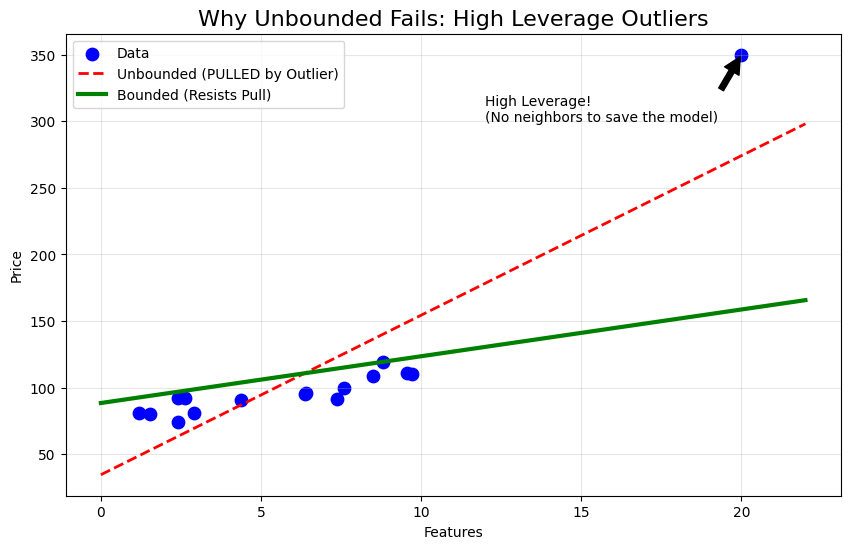
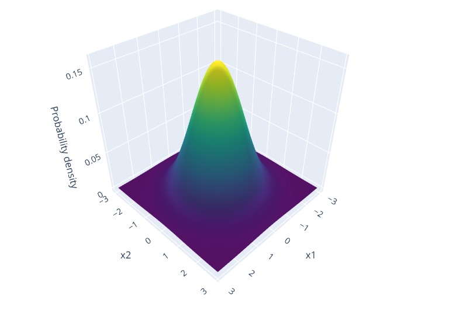
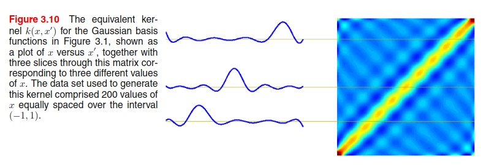
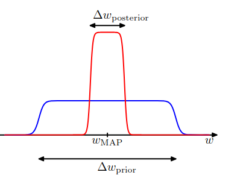

Chapter 1: Linear Models for Regression
This chapter mostly deals with linear models for regression and their basis functions (a fancy way of saying function on 'x'). This equation will come up a lot: \[ y(x) = w_0 + \sum_{i=1}^D w_i\,\phi\!\left({x}\right)\tag{1.1} \]
These are the key notations we'll be using in the chapter:
- \(x\): Input Sample
- \(t\): Target variable
- \(N\): Number of initial features
- \(M\): Number of data points
- \(D\): Number of input features (after feature engineering)
- \(\mathbf{w}\): Vector of model parameters (weights)
- \(y(x, \mathbf{w})\): Model prediction for input \(x\) given parameters \(\mathbf{w}\)
- \(\phi(x)\): Basis function applied to input \(x\) (for example, polynomial, Gaussian, etc.)
- \(\Phi\): Design matrix containing basis function evaluations for all data points
Suppose we are asked to model the relationship between apartment size (in sq.ft) and price for a Brigade apartment project in Bangalore.
| Flat ID | Size x (sq.ft) | Total Price (₹ Lakhs) |
|---|---|---|
| F1 | 650 | 68 |
| F2 | 800 | 82 |
| F3 | 1100 | 105 |
| F4 | 1400 | 128 |
| F5 | 1800 | 167 |
| F6 | 2200 | 215 |
A simple straight-line model may not be sufficient to describe this data accurately. In real-world, the relationship between size and price is often nonlinear due to location effects, floor level, amenities, and demand variations across different size ranges etc etc. The below equation is a general expression of what we're trying to achieve:

Question
Show that the 'tanh' and the logistic sigmoid functions are related by:
\[ \tanh(a) = 2\,\sigma(2a) - 1 \]Hence show that a general linear combination of logistic sigmoid functions of the form:
\[ y(x,w) = w_0 + \sum_{j=1}^M w_j\,\sigma\!\left(\frac{x-\mu_j}{s}\right) \tag{1.2} \]is equivalent to a linear combination of \(\tanh\) functions of the form:
\[ y(x,u) = u_0 + \sum_{j=1}^M u_j\,\tanh\!\left(\frac{x-\mu_j}{s}\right) \tag{1.3} \]and find expressions relating the new parameters \(\{u_j\}\) to the original parameters \(\{w_j\}\).
Solution:
We know that the logistic function:
\[ \sigma(a) = \frac{1}{1 + e^{-a}} \]and the RHS can be written as
\[ 2 . \frac{1}{1 + e^{-2a}} - 1 => \frac{2e^{2a}}{1 + e^{2a}} - 1 \]solving the above equation gives us
\[ \frac{e^{2a} - 1}{e^{2a} + 1} \]which is nothing but \(\tanh(a)\) (a different form though)
We can rewrite the relationship as:
\[ \sigma(a) = \frac{\tanh\left(\frac{a}{2}\right) + 1}{2} \]Substitute this relation into equation (1.2):
\[ \begin{aligned} y(x,w) &= w_0 + \sum_{j=1}^M w_j\,\sigma\!\left(\frac{x-\mu_j}{s}\right) \\ &= w_0 + \sum_{j=1}^M w_j\cdot\frac{1}{2}\left[\tanh\!\left(\frac{x-\mu_j}{2s}\right) + 1\right] \\ &= \left(w_0 + \frac{1}{2}\sum_{j=1}^M w_j\right) + \sum_{j=1}^M \frac{w_j}{2}\,\tanh\!\left(\frac{x-\mu_j}{2s}\right) \end{aligned} \]Comparing this with equation (1.3), we identify the new parameters as:
\[ u_0 \;=\; w_0 \;+\; \frac{1}{2}\sum_{j=1}^M w_j \] \[ u_j \;=\; \frac{w_j}{2} \qquad (j = 1,\ldots,M) \]which aligns to eqn (1.3) (not sure if there's a printing mistake but you get the idea)
Continuing from our Brigade apartment example, here's how the actual data might look like

The above graph represents a real life scenario where there's always a noise associated with the target variable. This can be generalised by the below equation:
\[ \mathbf{t}\ = \Phi \mathbf{w} + \boldsymbol{\epsilon} \]where \(\mathbf{t}\) is the column vector representing the target values for all data points; \(\Phi \mathbf{w}\) is the deterministic linear prediction; and \(\boldsymbol{\epsilon}\) represents the Gaussian noise (added so that we can generalise the model).

In order to learn the spread or uncertainity (as \(y(x, \mathbf{w})\) will just predict a value but we're more interested in the distribution), we'll calculate the probability of the target variable given the input and parameters.
\[ p(t_n|x_n, \mathbf{w}, \sigma^2) = \mathcal{N}(y(x_n, \mathbf{w}), \sigma^2) \]where \(\sigma^2\) is the variance of the Gaussian noise.
Now assuming all the data points are independent, likelihood (we'll discuss more on this in the later sections) is:
\[ p(\mathbf{t}|\mathbf{X}, \mathbf{w}, \sigma^2) = \prod_{n=1}^{M} \mathcal{N}(y(x_n, \mathbf{w}), \sigma^2) \]Taking the logarithm of the likelihood function, we get the log-likelihood:
\[ \ln p(\mathbf{t}|\mathbf{X}, \mathbf{w}, \sigma^2) = -\frac{M}{2}\ln \sigma^{2} - \frac{M}{2}\ln(2\pi) - \frac{E_D(\mathbf{w})}{\sigma^{2}} \]where \(E_D(\mathbf{w})\) is the sum-of-squares error function defined as:
\[ E_D(\mathbf{w}) = \frac{1}{2}\sum_{n=1}^{M} \left\{ t_n - \mathbf{w}^T \phi(\mathbf{x}_n) \right\}^2 \]Maximizing the log-likelihood is equivalent to minimizing the sum-of-squares error function.
\[ E(\mathbf{w}) = \frac{1}{2}\|\mathbf{t}-\Phi\mathbf{w}\|^2 = \frac{1}{2}(\mathbf{t}-\Phi\mathbf{w})^T(\mathbf{t}-\Phi\mathbf{w}) \] \[ \ln p(\mathbf{t}|\mathbf{w},\sigma^{2}) = \text{const} - \frac{E(\mathbf{w})}{\sigma^{2}} \] \[ \nabla_{\mathbf{w}} \ln p = - \nabla_{\mathbf{w}} \frac{E(\mathbf{w})}{\sigma^{2}} = 0 \] \[ \nabla_{\mathbf{w}} E(\mathbf{w}) = \nabla_{\mathbf{w}} \left[ \frac{1}{2}(\mathbf{t}-\Phi\mathbf{w})^T(\mathbf{t}-\Phi\mathbf{w}) \right] \] \[ \nabla_{\mathbf{w}} E(\mathbf{w}) = -\Phi^T(\mathbf{t}-\Phi\mathbf{w}) \] \[ \Rightarrow -\Phi^T\mathbf{t} + \Phi^T\Phi\mathbf{w} = 0 \] \[ \Rightarrow \Phi^T\Phi\mathbf{w} = \Phi^T\mathbf{t} \] \[ \Rightarrow \mathbf{w} = (\Phi^T\Phi)^{-1}\Phi^T\mathbf{t} \tag{1.4} \]Question
Show that the matrix \[ H = \Phi(\Phi^{T}\Phi)^{-1}\Phi^{T} \tag{1.5} \] takes any vector \( \mathbf{v} \) and projects it onto the space spanned by the columns of \( \Phi \). Use this result to show that the least-squares solution \[ \mathbf{y} = \Phi\mathbf{w}_{\text{LS}} = \Phi(\Phi^{T}\Phi)^{-1}\Phi^{T}\mathbf{t} \ \] corresponds to an orthogonal projection of the vector \( \mathbf{t} \) onto the manifold \( \mathcal{S} \).
Solution:
Let's define our matrix as \(H\) (the Hat Matrix). If we multiply it by any arbitrary vector \(\mathbf{v}\):
\[ \mathbf{u} = H\mathbf{v} = \Phi \underbrace{\left[ (\Phi^T\Phi)^{-1}\Phi^T \mathbf{v} \right]}_{\text{some vector } \mathbf{a}} \]The result \(\mathbf{u}\) is equal to \(\Phi \mathbf{a}\). By definition, any vector \(\Phi \mathbf{a}\) is a linear combination of the columns of \(\Phi\). Therefore, \(H\) maps any vector into the column space of \(\Phi\).
The least squares prediction is \(\mathbf{y} = H\mathbf{t}\). The residual (error) vector is:
\[ \mathbf{r} = \mathbf{t} - \mathbf{y} = (I - H)\mathbf{t} \]For the projection to be orthogonal, the residual \(\mathbf{r}\) must be perpendicular to the subspace (the columns of \(\Phi\)). We check the dot product \(\Phi^T \mathbf{r}\):
\[ \begin{aligned} \Phi^T \mathbf{r} &= \Phi^T (\mathbf{t} - \Phi(\Phi^T\Phi)^{-1}\Phi^T \mathbf{t}) \\ &= \Phi^T \mathbf{t} - (\Phi^T\Phi)(\Phi^T\Phi)^{-1}\Phi^T \mathbf{t} \\ &= \Phi^T \mathbf{t} - I \cdot \Phi^T \mathbf{t} \\ &= 0 \end{aligned} \]Since the dot product is zero, the residual is orthogonal to the column space.

In the previous problem (1.2), we assumed that every data point (apartment price) was equally reliable. However, in real-world scenarios, this is rarely the case.
For example, in our Brigade apartment dataset:
i. A price from a verified government sale deed is highly reliable (High weight).
ii. A price from an anonymous online posting might be noisy or inaccurate (Low weight).
To handle this, we assign a "weight" \(r_n\) to each data point. If a point is reliable, \(r_n\) is large; if it's noisy, \(r_n\) is small. This technique is known as Weighted Least Squares.
We collect these weights into a diagonal matrix \(R\) of size \(M \times M\). The off-diagonal elements are zero because we assume the noise in one price is independent of the others:
\[ R = \begin{bmatrix} r_1 & 0 & \cdots & 0 \\ 0 & r_2 & \cdots & 0 \\ \vdots & \vdots & \ddots & \vdots \\ 0 & 0 & \cdots & r_M \end{bmatrix} \]
Question
Consider a data set in which each data point \(t_n\) is associated with a weighting factor \(r_n > 0\), so that the sum-of-squares error function becomes
\[ E_D(\mathbf{w}) = \frac{1}{2}\sum_{n=1}^{M} r_n \left\{ t_n - \mathbf{w}^T \phi(\mathbf{x}_n) \right\}^2 \]Find an expression for the solution \(\mathbf{w}^*\) that minimizes this error function. Give two alternative interpretations of the weighted sum-of-squares error function in terms of: (i) data-dependent noise variance and (ii) replicated data points.
Solution:
First, it is helpful to express the error function in matrix notation. We introduce a diagonal matrix \(\mathbf{R}\) of size \(M \times M\) containing the weights:
\[ \mathbf{R} = \text{diag}(r_1, r_2, \dots, r_M) \]The weighted sum-of-squares error can now be written as:
\[ E_D(\mathbf{w}) = \frac{1}{2} (\mathbf{t} - \Phi\mathbf{w})^T \mathbf{R} (\mathbf{t} - \Phi\mathbf{w}) \]To find the minimizer \(\mathbf{w}^*\), we set the gradient with respect to \(\mathbf{w}\) to zero:
\[ \nabla_{\mathbf{w}} E_D(\mathbf{w}) = -\Phi^T \mathbf{R} (\mathbf{t} - \Phi\mathbf{w}) = 0 \]Rearranging the terms to solve for \(\mathbf{w}\):
\[ \Phi^T \mathbf{R} \Phi \mathbf{w} = \Phi^T \mathbf{R} \mathbf{t} \] \[ \mathbf{w}^* = (\Phi^T \mathbf{R} \Phi)^{-1} \Phi^T \mathbf{R} \mathbf{t} \]This is the solution for Weighted Least Squares. Note that if \(\mathbf{R} = \mathbf{I}\) (identity matrix), this reduces to the standard least squares solution found in Problem 1.2.
Recall that the standard sum-of-squares error comes from maximizing the likelihood of a Gaussian distribution with constant variance \(\sigma^2\).
If we assume that each data point \(t_n\) has its own specific variance \(\sigma_n^2\), the likelihood function becomes:
\[ p(\mathbf{t}|\mathbf{w}) = \prod_{n=1}^{M} \mathcal{N}(t_n | \mathbf{w}^T \phi(\mathbf{x}_n), \sigma_n^2) \]Taking the negative log-likelihood, we isolate the error term:
\[ \frac{1}{2} \sum_{n=1}^{M} \frac{1}{\sigma_n^2} (t_n - \mathbf{w}^T \phi(\mathbf{x}_n))^2 \]By comparing this to our weighted error function, we can see that:
\[ r_n = \frac{1}{\sigma_n^2} \quad \]Interpretation: The weight \(r_n\) represents the precision of the measurement. Points with high uncertainty (high variance) are given low weights, and points with high precision are given high weights.
Consider the case where all weights \(r_n\) are integers. The term:
\[ r_n \left\{ t_n - \mathbf{w}^T \phi(\mathbf{x}_n) \right\}^2 \]is mathematically equivalent to:
\[ \underbrace{\left\{ t_n - \mathbf{w}^T \phi(\mathbf{x}_n) \right\}^2 + \dots + \left\{ t_n - \mathbf{w}^T \phi(\mathbf{x}_n) \right\}^2}_{r_n \text{ times}} \]Interpretation: We can view weighted least squares as a standard least squares problem on a dataset where the \(n\)-th observation has been replicated \(r_n\) times. This gives that specific data point more "voting power" in determining the model parameters.
So far, we examined several realistic sources of uncertainty in regression:
- Noise in the target variable (for example, apartment prices fluctuating).
- Unequal reliability of data points, leading to Weighted Least Squares.
Consider the following examples where apartment-related measurements may contain errors:
| Feature | Example | How Noise Appears |
|---|---|---|
| Size (sq.ft) | 1150 | Laser measurement error, rounding |
| Age of Building | 8 years | Maintenance records inconsistent |
| Floor Number | 11 | Manual entry mistakes |
Let the true, noise-free input be denoted by \(x_n\). The value stored in the dataset is corrupted by measurement noise:
\[ \tilde{x_n} = x_n + \epsilon_n \]
We assume that the noise added to each input dimension is Gaussian with zero mean and variance \(\sigma^2\):
\[ \epsilon_n \sim \mathcal{N}(0,\sigma_x^2), \qquad \mathbb{E}[\epsilon_i] = 0, \qquad \mathbb{E}[\epsilon_i \epsilon_j] = \delta_{ij}\,\sigma^2. \]
where \(\delta_{ij}\) is the Kronecker delta function, which is 1 if \(i = j\) and 0 otherwise.
Understanding how input noise influences the learning process leads to an important and elegant result which we'll derive in the next problem.
Question
Consider a linear model of the form \[ y(x, w) = w_0 + \sum_{i=1}^{D} w_i x_i \tag{1.6} \] together with a sum-of-squares error function \[ E_D(w) = \frac{1}{2}\sum_{n=1}^{M} \{\, y(x_n, w) - t_n \,\}^2 . \tag{1.7} \]
Now suppose that Gaussian noise \( \epsilon_i \) with zero mean and variance \( \sigma_x^2 \) is added independently to each input variable \( x_i \). Using the properties \[ \mathbb{E}[\epsilon_i] = 0, \qquad \mathbb{E}[\epsilon_i \epsilon_j] = \delta_{ij}\,\sigma_x^2, \] show that minimizing the expected value of \( E_D \) over the noise distribution is equivalent to minimizing the usual sum-of-squares error for noise-free inputs, but with an additional weight-decay regularizer in which the bias parameter \( w_0 \) is excluded from the penalty.
Solution:
First, let's express the model's prediction when it receives a noisy input \(\tilde{x}_{ni} = x_{ni} + \epsilon_{ni}\). Substituting this into the linear equation:
\[ y(\tilde{x}_n, w) = w_0 + \sum_{i=1}^{D} w_i (x_{ni} + \epsilon_{ni}) \]We can group the terms to separate the "clean" prediction from the noise:
\[ y(\tilde{x}_n, w) = \underbrace{\left( w_0 + \sum_{i=1}^{D} w_i x_{ni} \right)}_{y(x_n, w)} + \underbrace{\sum_{i=1}^{D} w_i \epsilon_{ni}}_{\text{Noise term}} \]For brevity, let's denote the noise term as \(\zeta_n = \sum_{i=1}^{D} w_i \epsilon_{ni}\). So, \(y_{noisy} = y_{clean} + \zeta_n\).
We want to minimize the expected error over the noise distribution. Let's substitute \(y_{noisy}\) into the sum-of-squares error:
\[ \tilde{E} = \mathbb{E} \left[ \frac{1}{2} \sum_{n=1}^{M} \{ y_{noisy} - t_n \}^2 \right] \] \[ \tilde{E} = \mathbb{E} \left[ \frac{1}{2} \sum_{n=1}^{M} \{ (y(x_n, w) - t_n) + \zeta_n \}^2 \right] \]Expanding the square term \((A+B)^2 = A^2 + 2AB + B^2\):
\[ \{ \dots \}^2 = \underbrace{(y(x_n, w) - t_n)^2}_{A^2} + \underbrace{2(y(x_n, w) - t_n)\zeta_n}_{2AB} + \underbrace{\zeta_n^2}_{B^2} \]We apply the expectation to each term individually:
- Term \(A^2\): Does not contain noise \(\epsilon\). So, \(\mathbb{E}[A^2] = (y(x_n, w) - t_n)^2\).
- Term \(2AB\): Contains the noise term \(\zeta_n\) which is linear in \(\epsilon\). Since \(\mathbb{E}[\epsilon] = 0\), the expectation of this whole cross-term is 0.
- Term \(B^2\): This is the expectation of the squared noise, \(\mathbb{E}[\zeta_n^2]\).
Thus, the total expected error simplifies to:
\[ \tilde{E} = \underbrace{\frac{1}{2} \sum_{n=1}^{N} (y(x_n, w) - t_n)^2}_{E_D(w)} + \frac{1}{2} \sum_{n=1}^{N} \mathbb{E}[\zeta_n^2] \]We need to solve \(\mathbb{E}[\zeta_n^2]\). Let's expand the squared sum using indices \(i\) and \(j\):
\[ \mathbb{E}\left[ \left( \sum_{i=1}^{D} w_i \epsilon_{ni} \right) \left( \sum_{j=1}^{D} w_j \epsilon_{nj} \right) \right] = \sum_{i=1}^{D} \sum_{j=1}^{D} w_i w_j \mathbb{E}[\epsilon_{ni} \epsilon_{nj}] \]Using the property \(\mathbb{E}[\epsilon_i \epsilon_j] = \delta_{ij} \sigma_x^2\), all terms where \(i \neq j\) vanish. We are left only with terms where \(i=j\):
\[ \sum_{i=1}^{D} w_i^2 \sigma_x^2 = \sigma_x^2 \sum_{i=1}^{D} w_i^2 \]Substituting this back into our error equation (summing over \(N\) data points):
\[ \tilde{E} = E_D(w) + \frac{1}{2} \sum_{n=1}^{M} \left( \sigma_x^2 \sum_{i=1}^{D} w_i^2 \right) \] \[ \tilde{E} = E_D(w) + \underbrace{\frac{1}{2} M \sigma_x^2}_{\lambda} \sum_{i=1}^{D} w_i^2 \]This is exactly the form of sum-of-squares error with an L2 Regularization term (Weight Decay). Note that the summation over weights starts from \(i=1\), meaning the bias \(w_0\) is excluded.
In the previous problems, we assumed that our model parameters (\(\mathbf{w}\)) were fixed. But what if we add a constraint that the weights should be bounded?
A natural question arises: why do we even have to bound parameters in first place?
To understand this, let’s look at how a model behaves when its weights are allowed to grow arbitrarily large.

A single outlier can disrupt our model, inorder to tackle this we bound our weights (Normal distribution in most cases).
| Aspect | MLE | MAP | Fully Bayesian |
|---|---|---|---|
| View of Weights \( \mathbf{w} \) | Fixed but unknown parameters | Random variables (with prior) | Random variables with full posterior distribution (gives a probability distribution on \(\mathbf{w}\)) |
| Objective Function | \( \displaystyle \mathbf{w}_{\text{MLE}} = \arg\max_{\mathbf{w}} \; p(\mathbf{t}\mid \mathbf{w}) \) | \( \displaystyle \mathbf{w}_{\text{MAP}} = \arg\max_{\mathbf{w}} \; p(\mathbf{w}\mid \mathbf{t}) \) \[ = \arg\max_{\mathbf{w}} \; p(\mathbf{t}\mid \mathbf{w})\,p(\mathbf{w}) \] | No single best estimate — compute full posterior: \[ p(\mathbf{w}\mid \mathbf{t}) = \frac{p(\mathbf{t}\mid \mathbf{w})p(\mathbf{w})}{p(\mathbf{t})} \] |
| Best Use Case | Large datasets, low prior knowledge | When regularization/prior knowledge helps | When uncertainty matters (small data, predictions with confidence) |
In this problem, we combine the geometric regularization we found earlier (Input Noise) with this probabilistic regularization (MAP).
Question
Consider a linear regression model of the form: \[y(x, \mathbf{w}) = w_0 + \sum_{i=1}^{D} w_i x_i \]
Assume the following probabilistic model:
- Each input variable is corrupted by independent Gaussian noise: $\tilde{x}_{ni} = x_{ni} + \delta_i$, where $\delta_i \sim \mathcal{N}(0, \sigma_x^2)$.
- The target variables have Gaussian noise: $t_n = y(\tilde{\mathbf{x}}_n, \mathbf{w}) + \epsilon_n$, where $\epsilon_n \sim \mathcal{N}(0, \sigma_t^2)$.
- The weights (excluding bias) have independent Gaussian priors: $p(w_i) = \mathcal{N}(0, \sigma_w^2)$.
Show that maximizing the posterior distribution $p(\mathbf{w} | \mathbf{t}, \mathbf{X})$ over the weights, after averaging over the input noise distribution, is equivalent to minimizing the regularized error function:
$$\tilde{E}(\mathbf{w}) = \frac{1}{2} \sum_{n=1}^{M} \{y(\mathbf{x}_n, \mathbf{w}) - t_n\}^2 + \frac{\lambda}{2} \sum_{i=1}^{D} w_i^2 \tag{1.8}$$
Determine the relationship between $\lambda$, $\sigma_w^2$, $\sigma_x^2$, and $\sigma_t^2$.
Solution
First, we analyze how the noise in the input propagates to the target variable. We are given: $$ \tilde{x}_{ni} = x_{ni} + \delta_i, \quad \delta_i \sim \mathcal{N}(0, \sigma_x^2) $$ $$ t_n = y(\tilde{\mathbf{x}}_n, \mathbf{w}) + \epsilon_n, \quad \epsilon_n \sim \mathcal{N}(0, \sigma_t^2) $$
Substituting the noisy input into the linear model $$ y(\tilde{\mathbf{x}}_n, \mathbf{w}) = \underbrace{w_0 + \sum_{i=1}^D w_i x_{ni}}_{y(\mathbf{x}_n, \mathbf{w})} + \underbrace{\sum_{i=1}^D w_i \delta_i}_{\text{Input Noise}} $$
The target $t$ can thus be written as the true model plus a total noise term: $$ t_n = y(\mathbf{x}_n, \mathbf{w}) + \left( \sum_{i=1}^D w_i \delta_i + \epsilon_n \right) $$
We calculate the variance of this combined noise (assuming independence): $$ \sigma_{\text{total}}^2 = \text{Var}\left( \sum w_i \delta_i \right) + \text{Var}(\epsilon) $$ $$ \sigma_{\text{total}}^2 = \sum w_i^2 \text{Var}(\delta_i) + \sigma_t^2 $$ $$ \sigma_{\text{total}}^2 = \sigma_x^2 \|\mathbf{w}\|^2 + \sigma_t^2 $$
According to Bayes' Theorem: $$ P(\mathbf{w} | \mathbf{t}) = \frac{P(\mathbf{t} | \mathbf{w}) P(\mathbf{w})}{P(\mathbf{t})} \propto P(\mathbf{t} | \mathbf{w}) P(\mathbf{w}) $$
We want to find the weights $\mathbf{w}^*$ that maximize the posterior probability (or minimize the negative log-posterior): $$ \mathbf{w}^* = \underset{\mathbf{w}}{\arg\min} \left( - \ln P(\mathbf{t} | \mathbf{w}) - \ln P(\mathbf{w}) \right) $$
The Likelihood Term: Assuming $M$ i.i.d samples with variance $\sigma_{\text{total}}^2$: $$ P(\mathbf{t} | \mathbf{w}) = \prod_{n=1}^{M} \mathcal{N}(t_n | y(\mathbf{x}_n, \mathbf{w}), \sigma_{\text{total}}^2) $$ Taking the negative log (ignoring constants): $$ -\ln P(\mathbf{t} | \mathbf{w}) \propto \sum_{n=1}^{M} \frac{(t_n - y(\mathbf{x}_n, \mathbf{w}))^2}{2\sigma_{\text{total}}^2} $$
The Prior Term: Given $p(w_i) = \mathcal{N}(0, \sigma_w^2)$: $$ P(\mathbf{w}) \propto \prod_{i=1}^{D} \exp\left( -\frac{w_i^2}{2\sigma_w^2} \right) = \exp\left( -\frac{\|\mathbf{w}\|^2}{2\sigma_w^2} \right) $$ Taking the negative log: $$ -\ln P(\mathbf{w}) \propto \frac{\|\mathbf{w}\|^2}{2\sigma_w^2} $$
Combining these, our objective function $J(\mathbf{w})$ becomes: $$ J(\mathbf{w}) = \frac{1}{2\sigma_{\text{total}}^2} \sum_{n=1}^{N} \{y(\mathbf{x}_n, \mathbf{w}) - t_n\}^2 + \frac{1}{2\sigma_w^2} \|\mathbf{w}\|^2 $$
To match the form $\tilde{E}(\mathbf{w}) = \frac{1}{2} \sum \text{error}^2 + \frac{\lambda}{2} \|\mathbf{w}\|^2$, we multiply through by $\sigma_{\text{total}}^2$:
$$ \tilde{E}(\mathbf{w}) = \frac{1}{2} \sum_{n=1}^{N} \{y(\mathbf{x}_n, \mathbf{w}) - t_n\}^2 + \underbrace{\frac{\sigma_{\text{total}}^2}{2\sigma_w^2}}_{\frac{\lambda}{2}} \|\mathbf{w}\|^2 $$
Thus, the regularization parameter $\lambda$ is given by the ratio of the noise variance to the prior variance: $$ \lambda = \frac{\sigma_x^2 \|\mathbf{w}\|^2 + \sigma_t^2}{\sigma_w^2} $$
Maximizing the posterior (MAP) with a Gaussian prior is mathematically equivalent to minimizing the Sum of Squared Errors with an L2 regularization term (Ridge Regression). The "strength" of the regularization ($\lambda$) depends directly on how noisy the data is ($\sigma_{\text{total}}^2$) versus how uncertain we are about the weights ($\sigma_w^2$).
Karush-Kuhn-Tucker (KKT) Conditions generalize the method of Lagrange Multipliers to handle both equality and inequality constraints. While Lagrange multipliers deal with equality constraints (staying on a surface), KKT handles both surfaces (equality) and boundaries (inequality).
For a general optimization problem:
\[ \text{Minimize } f(x) \quad \text{subject to} \] \[ g_j(x) \le 0 \quad \text{for } j=1 \dots J \quad \text{(inequality constraints)} \] \[ h_k(x) = 0 \quad \text{for } k=1 \dots K \quad \text{(equality constraints)} \]
We define the Lagrangian function as:
\[ L(x, \lambda, \mu) = f(x) + \sum_{j=1}^{J} \lambda_j g_j(x) + \sum_{k=1}^{K} \mu_k h_k(x) \]
For a point \(x^*\) to be a local minimum, the KKT conditions require:
- Stationarity: The gradient of the Lagrangian must be zero. \[ \nabla_x L(x^*, \lambda, \mu) = 0 \] (Equivalent to \(\nabla f(x^*) + \sum \lambda_j \nabla g_j(x^*) + \sum \mu_k \nabla h_k(x^*) = 0\))
- Primal Feasibility: The solution must satisfy all constraints. \[g_j(x^*) \le 0 \quad \text{and} \quad h_k(x^*) = 0\]
- Dual Feasibility: Inequality multipliers must be non-negative. \(\lambda_j
\ge 0\)
(Note: \(\mu_k\) can be any real number) - Complementary Slackness: For each inequality constraint: \[\lambda_j \cdot g_j(x^*) = 0\] Either the constraint is inactive (\(\lambda_j=0\)) or you are on the boundary (\(g_j(x^*)=0\)).
Question
Consider an objective function representing a paraboloid: \[ f(x, y) = x^2 + 2y^2 \]
We wish to minimize this function subject to:
\[ h(x, y) = x + 2y = 3 \] \[ g(x, y) = x \le y \quad \]Use the KKT conditions to find the optimal solution \((x^*, y^*)\).
Solution:
Equality constraint (must always be satisfied):
\[ h(x, y) = x + 2y - 3 = 0 \]Inequality constraint (in standard form \(g \le 0\)):
\[ g(x, y) = x - y \le 0 \]where \(\lambda\) is the multiplier for the inequality and \(\mu\) is the multiplier for the equality.
- Stationarity: \[ \frac{\partial L}{\partial x} = 2x + \lambda + \mu = 0 \tag{1.9} \] \[ \frac{\partial L}{\partial y} = 4y - \lambda + 2\mu = 0 \tag{1.10} \]
- Primal Feasibility: \(x + 2y = 3\) (equality always holds) and \(x \le y\) (inequality)
- Dual Feasibility: \(\lambda \ge 0\) (no restriction on \(\mu\))
- Complementary Slackness: \(\lambda \cdot g(x,y) = 0\)
Since the equality constraint is always active, we only test two cases for the inequality.
Assumption: The constraint \(x \le y\) is not binding.
- Solve the System:
From (1.9) with \(\lambda=0\): \(2x + \mu = 0 \implies \mu = -2x\)
From (1.10) with \(\lambda=0\): \(4y + 2\mu = 0 \implies \mu = -2y\)
Therefore: \(-2x = -2y \implies x = y\) - Find the Point:
Substitute \(x = y\) into the equality constraint \(x + 2y = 3\):
\(y + 2y = 3 \implies 3y = 3 \implies \mathbf{y = 1}\)
Therefore \(\mathbf{x = 1}\) - Check Inequality: Is \(x \le y\)?
\(1 \le 1\) is True (boundary case). - Verify Multipliers:
\(\mu = -2x = -2(1) = -2\) ✓ (no restriction)
\(\lambda = 0\) ✓ - Check Slackness:
\(\lambda \cdot g(x,y) = 0 \cdot (1-1) = 0\) ✓
Assumption: The constraint \(x = y\) is binding.
- Solve the System:
From the active constraint: \(x = y\)
From equality: \(x + 2y = 3 \implies y + 2y = 3 \implies \mathbf{y = 1, x = 1}\) - Find Multipliers:
From (1.9): \(2(1) + \lambda + \mu = 0 \implies \lambda + \mu = -2\) ...(i)
From (1.10): \(4(1) - \lambda + 2\mu = 0 \implies -\lambda + 2\mu = -4\) ...(ii)
Add (i) and (ii): \(3\mu = -6 \implies \mathbf{\mu = -2}\)
From (i): \(\lambda = -2 - \mu = -2 - (-2) = \mathbf{0}\) - Check Dual Feasibility:
\(\lambda = 0 \ge 0\) ✓
The optimal solution is: \[ (x^*, y^*) = (1, 1) \]
The optimal objective value is: \[ f(1, 1) = 1^2 + 2(1)^2 = 3 \]
Interactive Visualization: Constrained Optimization
This visualization demonstrates a constrained optimization problem where we minimize f(x,y) = x² + 2y² subject to x ≤ y and x + 2y = 3.
So far in this chapter, we considered the target variable \( t \) was a single scalar quantity (apartment price). We now extend this framework to the case of multiple outputs.
\[ \mathbf{t}_n = \begin{bmatrix} \text{Price} \\ \text{Rent} \\ \text{Maintenance} \end{bmatrix} \in \mathbb{R}^K \]where \( \mathbf{t}_n \) is the target vector associated with the \( n \)-th input, and \( K \) denotes the dimensionality of the output space.
To model multiple outputs, a single weight vector is no longer sufficient. Instead, we introduce a weight matrix \( \mathbf{W} \), where:
- Each column of \( \mathbf{W} \) corresponds to one output variable.
- Each output has its own linear regression model, sharing the same basis functions.
The model now takes the form:
\[ \mathbf{y}(\mathbf{x}, \mathbf{W}) = \mathbf{W}^T \boldsymbol{\phi}(x) \]which produces a vector-valued prediction, matching the structure of the target \( \mathbf{t}_n \).
In earlier sections, we assumed that the noise in the target variable was scalar and independent. In the multivariate setting, the prediction errors across outputs may or may not be correlated.
For example:
- Apartments with high prices often also have high rents.
- Maintenance costs may be correlated with apartment size.
To capture both uncertainty and correlation between outputs, we assume that the target vector follows a multivariate Gaussian distribution:
\[ p(\mathbf{t} \mid \mathbf{W}, \boldsymbol{\Sigma}) = \mathcal{N}\!\left( \mathbf{t} \mid \mathbf{y}(x, \mathbf{W}), \boldsymbol{\Sigma} \right) \]The multivariate Gaussian distribution is defined as:
\[ \mathcal{N}(\mathbf{x} \mid \boldsymbol{\mu}, \boldsymbol{\Sigma}) = \frac{1}{(2\pi)^{K/2} \lvert \boldsymbol{\Sigma} \rvert^{1/2}} \exp\!\left( -\frac{1}{2} (\mathbf{x} - \boldsymbol{\mu})^T \boldsymbol{\Sigma}^{-1} (\mathbf{x} - \boldsymbol{\mu}) \right) \tag{1.13} \]where \( \boldsymbol{\mu} \) represents the mean vector, \( \boldsymbol{\Sigma} \) is the covariance matrix. This distribution naturally generalizes the univariate Gaussian and allows us to model correlated noise in multiple dimensions.

Question
Consider a linear basis function regression model for a multivariate target variable $\mathbf{t}$ having a Gaussian distribution of the form
$$p(\mathbf{t}|\mathbf{W}, \mathbf{\Sigma}) = \mathcal{N}(\mathbf{t}|\mathbf{y}(\mathbf{x}, \mathbf{W}), \mathbf{\Sigma}) \tag{1.14}$$
where
$$\mathbf{y}(\mathbf{x}, \mathbf{W}) = \mathbf{W}^T\boldsymbol{\phi}(\mathbf{x}) \tag{1.15}$$
together with a training data set comprising input basis vectors $\boldsymbol{\phi}(\mathbf{x}_n)$ and corresponding target vectors $\mathbf{t}_n$, with $n = 1, \dots, M$.
Show that the maximum likelihood solution $\mathbf{W}_{ML}$ for the parameter matrix $\mathbf{W}$ has the property that each column is given by an expression of the form (1.4), which was the solution for an isotropic noise distribution. Note that this is independent of the covariance matrix $\mathbf{\Sigma}$.
Show that the maximum likelihood solution for $\mathbf{\Sigma}$ is given by
$$\mathbf{\Sigma} = \frac{1}{M} \sum_{n=1}^M (\mathbf{t}_n - \mathbf{W}_{ML}^T\boldsymbol{\phi}(\mathbf{x}_n)) (\mathbf{t}_n - \mathbf{W}_{ML}^T\boldsymbol{\phi}(\mathbf{x}_n))^T \tag{1.16}$$
Solution:
We begin by writing the likelihood function for the entire dataset. Given \(M\) independent observations, the likelihood is:
\[ p(\mathbf{T}|\mathbf{W}, \boldsymbol{\Sigma}) = \prod_{n=1}^{M} \mathcal{N}(\mathbf{t}_n | \mathbf{W}^T\boldsymbol{\phi}(\mathbf{x}_n), \boldsymbol{\Sigma}) \]where \(\mathbf{T}\) is the \(M \times K\) matrix whose \(n\)-th row is \(\mathbf{t}_n^T\).
Taking the logarithm of the likelihood:
\[ \ln p(\mathbf{T}|\mathbf{W}, \boldsymbol{\Sigma}) = \sum_{n=1}^{M} \ln \mathcal{N}(\mathbf{t}_n | \mathbf{W}^T\boldsymbol{\phi}(\mathbf{x}_n), \boldsymbol{\Sigma}) \]Using the definition of the multivariate Gaussian from equation (1.13):
\[ \begin{aligned} \ln p(\mathbf{T}|\mathbf{W}, \boldsymbol{\Sigma}) &= \sum_{n=1}^{M} \left[ -\frac{K}{2}\ln(2\pi) - \frac{1}{2}\ln|\boldsymbol{\Sigma}| \right. \\ &\quad \left. - \frac{1}{2}(\mathbf{t}_n - \mathbf{W}^T\boldsymbol{\phi}(\mathbf{x}_n))^T \boldsymbol{\Sigma}^{-1} (\mathbf{t}_n - \mathbf{W}^T\boldsymbol{\phi}(\mathbf{x}_n)) \right] \end{aligned} \]Removing constant terms and focusing on the term that depends on \(\mathbf{W}\):
\[ \ln p(\mathbf{T}|\mathbf{W}, \boldsymbol{\Sigma}) = \text{const} - \frac{1}{2} \sum_{n=1}^{M} (\mathbf{t}_n - \mathbf{W}^T\boldsymbol{\phi}(\mathbf{x}_n))^T \boldsymbol{\Sigma}^{-1} (\mathbf{t}_n - \mathbf{W}^T\boldsymbol{\phi}(\mathbf{x}_n)) \]Taking the derivative with respect to \(\mathbf{W}\):
\[ \nabla_{\mathbf{W}} \ln p = \sum_{n=1}^{M} \boldsymbol{\phi}_n \left( t_n - \mathbf{W}^T \boldsymbol{\phi}_n \right)^T \boldsymbol{\Sigma}^{-1} = 0 \]Since \(\boldsymbol{\Sigma}^{-1}\) is symmetric and positive definite, we can simplify the derivative:
\[ \sum_{n=1}^{M} \boldsymbol{\phi}_n \left( t_n - \mathbf{W}^T \boldsymbol{\phi}_n \right)^T = 0 \]Rearranging terms:
\[ \sum_{n=1}^{M} \boldsymbol{\phi}_n t_n^T = \sum_{n=1}^{M} \boldsymbol{\phi}_n \boldsymbol{\phi}_n^T \mathbf{W} \]Solving for \(\mathbf{W}\), we obtain:
\[ {\Phi}^T {T} = \left( {\Phi}^T {\Phi} \right)\mathbf{W} \] \[ \mathbf{W}_{ML} = \left( {\Phi}^T {\Phi} \right)^{-1} {\Phi}^T {T} \]Now we find the ML estimate for the covariance matrix. We maximize the log-likelihood with respect to \(\boldsymbol{\Sigma}\):
\[ \ln p = -\frac{M}{2}\ln |\boldsymbol{\Sigma}| -\frac{1}{2} \sum_{n=1}^{M} \left( \mathbf{t}_n - \mathbf{y}_n \right)^{T} \boldsymbol{\Sigma}^{-1} \left( \mathbf{t}_n - \mathbf{y}_n \right) + \text{const} \] Trace TrickScalar values (single numbers) are their own trace ($\text{Tr}(x)=x$). Also, the trace has a "cyclic property": $\text{Tr}(\mathbf{A}\mathbf{B}\mathbf{C}) = \text{Tr}(\mathbf{B}\mathbf{C}\mathbf{A}) = \text{Tr}(\mathbf{C}\mathbf{A}\mathbf{B})$.
We use this on the summation term in the likelihood function:
$$ (\mathbf{t}_n - \mathbf{y}_n)^T \mathbf{\Sigma}^{-1} (\mathbf{t}_n - \mathbf{y}_n) $$
$$ = \text{Tr}\left( (\mathbf{t}_n - \mathbf{y}_n)^T \mathbf{\Sigma}^{-1} (\mathbf{t}_n - \mathbf{y}_n) \right) $$
Using the cyclic property to move the vector to the end:
$$ = \text{Tr}\left( \mathbf{\Sigma}^{-1} (\mathbf{t}_n - \mathbf{y}_n)(\mathbf{t}_n - \mathbf{y}_n)^T \right) $$
Now we can pull the summation inside the trace:
$$ \sum_{n=1}^M (\dots) = \text{Tr}\left( \mathbf{\Sigma}^{-1} \sum_{n=1}^M (\mathbf{t}_n - \mathbf{y}_n)(\mathbf{t}_n - \mathbf{y}_n)^T \right) $$
Let's call that big summation matrix $\mathbf{S}$:
$$ \mathbf{S} = \sum_{n=1}^M (\mathbf{t}_n - \mathbf{y}_n)(\mathbf{t}_n - \mathbf{y}_n)^T $$
So our Likelihood to maximize is simpler now:
$$ \mathcal{L}(\mathbf{\Sigma}) = -\frac{M}{2} \ln|\mathbf{\Sigma}| - \frac{1}{2} \text{Tr}(\mathbf{\Sigma}^{-1} \mathbf{S}) $$
The Derivative w.r.t $\mathbf{\Sigma}^{-1}$
It is often easier to take the derivative with respect to the inverse matrix
$\mathbf{\Lambda} = \mathbf{\Sigma}^{-1}$.
(Note: $\ln|\mathbf{\Sigma}| = -\ln|\mathbf{\Sigma}^{-1}| = -\ln|\mathbf{\Lambda}|$)
$$ \mathcal{L}(\mathbf{\Lambda}) = \frac{M}{2} \ln|\mathbf{\Lambda}| - \frac{1}{2} \text{Tr}(\mathbf{\Lambda}\mathbf{S}) $$
Using standard matrix derivative identities:
- $\frac{\partial}{\partial \mathbf{X}} \ln|\mathbf{X}| = (\mathbf{X}^{-1})^T = \mathbf{X}^{-T}$
- $\frac{\partial}{\partial \mathbf{X}} \text{Tr}(\mathbf{X}\mathbf{A}) = \mathbf{A}^T$
We differentiate $\mathcal{L}$ with respect to $\mathbf{\Lambda}$ and set to 0:
$$ \frac{M}{2} \mathbf{\Lambda}^{-1} - \frac{1}{2} \mathbf{S} = \mathbf{0} $$
Since $\mathbf{\Lambda} = \mathbf{\Sigma}^{-1}$, then $\mathbf{\Lambda}^{-1} = \mathbf{\Sigma}$.
$$ \frac{M}{2} \mathbf{\Sigma} - \frac{1}{2} \mathbf{S} = \mathbf{0} $$
$$ M\mathbf{\Sigma} = \mathbf{S} \implies \mathbf{\Sigma}_{ML} = \frac{1}{M} \mathbf{S} $$
Substituting $\mathbf{S}$ back in, we get the final result:
$$ \mathbf{\Sigma}_{ML} = \frac{1}{M} \sum_{n=1}^M (\mathbf{t}_n - \mathbf{W}_{ML}^T\phi(\mathbf{x}_n)) (\mathbf{t}_n - \mathbf{W}_{ML}^T\phi(\mathbf{x}_n))^T $$
- Decoupling Property: Even though the outputs may be correlated (captured by \(\boldsymbol{\Sigma}\)), the optimal weights for each output can be computed independently using the standard least squares formula. This is computationally very convenient!
- Two-Stage Process: First, solve \(K\) independent regression problems to get \(\mathbf{W}_{ML}\). Then, compute the covariance of the residuals to get \(\boldsymbol{\Sigma}_{ML}\).
- Geometric Interpretation: The covariance matrix \(\boldsymbol{\Sigma}\) tells us the shape of the error ellipsoid in output space, but doesn't affect where the center of that ellipsoid should be positioned (which is determined by \(\mathbf{W}\)).
- Connection to Univariate Case: When \(K=1\), this reduces exactly to the single-output regression we studied earlier, with \(\boldsymbol{\Sigma} = \sigma^2\) being a scalar variance.
In all the problems we've tackled so far, we assumed that we had access to the entire dataset at once. We computed the posterior distribution (MAP) in a single batch by processing all \(M\) data points together.
Suppose we've already built a model using data from apartments F1 through F6 (our original 6 data points). Our real estate contact just called—a new apartment F7 has been sold, and we now have its size and price information.
We have two options:
1. Batch Retraining
Recompute the entire model from scratch using all \(M+1\) samples (F1 through F7). This means:
- Reconstructing the full \((M+1) \times D\) design matrix \(\mathbf{\Phi}_{M+1}\)
- Inverting a \(D \times D\) matrix: \((\mathbf{\Phi}_{M+1}^T \mathbf{\Phi}_{M+1})^{-1}\)
- Repeating all matrix multiplications
This is computationally expensive and wasteful—we're throwing away all the work we already did!
2. Sequential Update
Use Sequential Bayesian Learning to update our existing model incrementally:
- Use our current posterior as the new prior — our existing knowledge about apartment prices becomes our starting point
- Calculate the likelihood of the new observation \((x_{M+1}, t_{M+1})\)
- Update the posterior using Bayes' rule
This requires only the new data point—no need to store or reprocess the old data!
The beautiful property of Bayesian inference is that:
Today's posterior becomes tomorrow's prior.
After observing \(M\) apartment sales, we have a posterior distribution \(p(\mathbf{w} \mid \mathbf{t}_M, \mathbf{X}_M)\). When apartment F7's data \((x_{M+1}, t_{M+1})\) arrives:
\[\underbrace{p(\mathbf{w} \mid \text{F1,...,F6})}_{\text{Previous Posterior}} \xrightarrow{\text{New data: F7}} \underbrace{p(\mathbf{w} \mid \text{F1,...,F7})}_{\text{Updated Posterior}}\]This incremental update is mathematically equivalent to batch processing all \(M+1\) points at once (we'll try to prove this in the coding section), but computationally much more efficient.
Question
Consider the linear basis function model from (1.1), where we have already observed \(M\) data points. The posterior distribution over the weight vector \(\mathbf{w}\) is given by:
\[ p(\mathbf{w} \mid \mathbf{t}_M, \mathbf{X}_M, \sigma_w^2, \sigma_t^2) = \mathcal{N}(\mathbf{w} \mid \boldsymbol{\mu}_M, \boldsymbol{\Sigma}_M) \tag{1.17} \]where \(\boldsymbol{\mu}_M\) is the posterior mean / MAP estimate and \(\boldsymbol{\Sigma}_M\) is the covariance matrix of weights distribution.
This posterior can be regarded as the prior for the next observation.
By considering this additional data point \((x_{M+1}, t_{M+1})\), and completing the square in the exponential, show that:
- The resulting posterior distribution is still Gaussian (i.e., maintains the form of equation 1.17)
- The updated posterior has:
- Covariance matrix: \(\boldsymbol{\Sigma}_M\) replaced by \(\boldsymbol{\Sigma}_{M+1}\)
- Mean vector: \(\boldsymbol{\mu}_M\) replaced by \(\boldsymbol{\mu}_{M+1}\)
In other words, prove that:
\[p(\mathbf{w} \mid \mathbf{t}_{M+1}, \mathbf{X}_{M+1}, \boldsymbol{\Sigma}_{M+1}, \sigma_t) = \mathcal{N}(\mathbf{w} \mid \boldsymbol{\mu}_{M+1}, \boldsymbol{\Sigma}_{M+1})\tag{1.18}\]and derive explicit update formulas for \(\boldsymbol{\Sigma}_{M+1}\) and \(\boldsymbol{\mu}_{M+1}\) in terms of \(\boldsymbol{\Sigma}_M\), \(\boldsymbol{\mu}_M\).
Solution:
We have a posterior distribution after observing \(M\) data points. Let's denote \(\boldsymbol{\phi}_{M+1} = \boldsymbol{\phi}(x_{M+1})\) for brevity.
Prior (our current posterior after M observations):
\[ p(\mathbf{w} \mid \mathbf{t}_M, \mathbf{X}_M) = \mathcal{N}(\mathbf{w} \mid \boldsymbol{\mu}_M, \boldsymbol{\Sigma}_M) \propto \exp\left(-\frac{1}{2}(\mathbf{w} - \boldsymbol{\mu}_M)^T \boldsymbol{\Sigma}_M^{-1} (\mathbf{w} - \boldsymbol{\mu}_M)\right) \]Likelihood (new observation):
\[ p(t_{M+1} \mid \mathbf{w}, x_{M+1}) = \mathcal{N}(t_{M+1} \mid \mathbf{w}^T \boldsymbol{\phi}_{M+1}, \sigma_t^2) \propto \exp\left(-\frac{1}{2\sigma_t^2}(t_{M+1} - \mathbf{w}^T \boldsymbol{\phi}_{M+1})^2\right) \]Posterior (by Bayes' rule):
\[ p(\mathbf{w} \mid \mathbf{t}_{M+1}, \mathbf{X}_{M+1}) \propto p(t_{M+1} \mid \mathbf{w}, x_{M+1}) \cdot p(\mathbf{w} \mid \mathbf{t}_M, \mathbf{X}_M) \]Multiplying the likelihood and prior means adding their exponents:
\[ \begin{aligned} \log p(\mathbf{w} \mid \mathbf{t}_{M+1}, \mathbf{X}_{M+1}) &= -\frac{1}{2\sigma_t^2}(t_{M+1} - \mathbf{w}^T \boldsymbol{\phi}_{M+1})^2 \\ &\quad - \frac{1}{2}(\mathbf{w} - \boldsymbol{\mu}_M)^T \boldsymbol{\Sigma}_M^{-1} (\mathbf{w} - \boldsymbol{\mu}_M) + \text{const} \end{aligned} \]We need to show this is still a Gaussian in \(\mathbf{w}\) by completing the square.
Let's expand \((t_{M+1} - \mathbf{w}^T \boldsymbol{\phi}_{M+1})^2\):
\[ -\frac{1}{2\sigma_t^2}(t_{M+1} - \mathbf{w}^T \boldsymbol{\phi}_{M+1})^2 = -\frac{1}{2\sigma_t^2}\mathbf{w}^T (\boldsymbol{\phi}_{M+1}\boldsymbol{\phi}_{M+1}^T) \mathbf{w} + \frac{t_{M+1}}{\sigma_t^2}\mathbf{w}^T\boldsymbol{\phi}_{M+1} - \frac{t_{M+1}^2}{2\sigma_t^2} \]Combining Steps 2 and 3, the log posterior becomes:
\[ \begin{aligned} \log p(\mathbf{w} \mid \mathbf{t}_{M+1}, \mathbf{X}_{M+1}) &= -\frac{1}{2}\mathbf{w}^T \left(\boldsymbol{\Sigma}_M^{-1} + \frac{1}{\sigma_t^2}\boldsymbol{\phi}_{M+1}\boldsymbol{\phi}_{M+1}^T\right) \mathbf{w} \\ &\quad + \mathbf{w}^T \left(\boldsymbol{\Sigma}_M^{-1}\boldsymbol{\mu}_M + \frac{t_{M+1}}{\sigma_t^2}\boldsymbol{\phi}_{M+1}\right) + \text{const} \end{aligned} \]This is a quadratic form in \(\mathbf{w}\), which means it's a Gaussian distribution!
A general Gaussian \(\mathcal{N}(\mathbf{w} \mid \boldsymbol{\mu}, \boldsymbol{\Sigma})\) has log-density:
\[ \log p(\mathbf{w}) = -\frac{1}{2}\mathbf{w}^T \boldsymbol{\Sigma}^{-1} \mathbf{w} + \mathbf{w}^T \boldsymbol{\Sigma}^{-1}\boldsymbol{\mu} + \text{const} \]Comparing with our expression from Step 4, we can read off the parameters by matching coefficients:
From the quadratic term (coefficient of \(\mathbf{w}^T \mathbf{w}\)):
\[ \boxed{\boldsymbol{\Sigma}_{M+1}^{-1} = \boldsymbol{\Sigma}_M^{-1} + \frac{1}{\sigma_t^2}\boldsymbol{\phi}_{M+1}\boldsymbol{\phi}_{M+1}^T} \tag{1.19} \]From the linear term (coefficient of \(\mathbf{w}\)):
\[ \boldsymbol{\Sigma}_{M+1}^{-1}\boldsymbol{\mu}_{M+1} = \boldsymbol{\Sigma}_M^{-1}\boldsymbol{\mu}_M + \frac{t_{M+1}}{\sigma_t^2}\boldsymbol{\phi}_{M+1} \]Multiplying both sides by \(\boldsymbol{\Sigma}_{M+1}\):
\[ \boxed{\boldsymbol{\mu}_{M+1} = \boldsymbol{\Sigma}_{M+1}\left(\boldsymbol{\Sigma}_M^{-1}\boldsymbol{\mu}_M + \frac{t_{M+1}}{\sigma_t^2}\boldsymbol{\phi}_{M+1}\right)} \tag{1.20} \]Bayesian Learning Notebook
Explore and run the Bayesian Learning code interactively in Google Colab.
Bayesian Learning Notebook in Colab
Up until now, we have focused on finding the "best" weights w. But in the real world, a buyer doesn't care about your weight vector (w); they care about the price of the apartment they are looking at (\(t_*\)).
If we only provide a single price (either by MLE or MAP), we are hiding the most important part of the story: How much do we trust our own prediction (variance)?
In a Bayesian world, we don't just predict a number. We predict a probability distribution. This distribution tells us:
- The Most Likely Price: The center of our prediction (\(\boldsymbol{\mu}\))
- The Risk: The spread or "uncertainty" around that price (\(\boldsymbol{\sigma}^2\))
The predictive distribution answers the question: "What is the probability of different prices for a new apartment at size \(\mathbf{x}_*\)(new input vector)?"
\[ p(t_* \mid \mathbf{x}_*, \mathbf{t}, \mathbf{X}) = \int p(t_* \mid \mathbf{x}_*, \mathbf{w}) \, p(\mathbf{w} \mid \mathbf{t}, \mathbf{X}) \, d\mathbf{w} \tag{1.21} \]where \(t_*\) is the target value for the new input \(\mathbf{x}_*\), \(\mathbf{t}\) is the training target vector and \(\mathbf{X}\) is the training input matrix.
The terms -
- \( p(t_* \mid \mathbf{x}_*, \mathbf{w}) \) — the likelihood of the target value for a new input given the weights - given by \( \mathcal{N}(t_* \mid \mathbf{w}^\top \boldsymbol{\phi}(\mathbf{x}_*), \sigma_{t}^2) \)
- \( p(\mathbf{w} \mid \mathbf{t}, \mathbf{X}) \) — the posterior distribution over weights — \( \mathcal{N}\!\left( \mathbf{w} \;\middle|\; \boldsymbol{\mu}_M, \boldsymbol{\Sigma}_M \right) \), where \( \boldsymbol{\mu}_M \) is the MAP estimate (for a Gaussian posterior) and \( \boldsymbol{\Sigma}_M \) is the posterior covariance of the weights.
Now we'll prove that the predictive distribution is also a Gaussian in the upcoming section.
Show that the predictive distribution \( p(t_* \mid \mathbf{x}_*, \mathbf{t}, \mathbf{X}) \) is a Gaussian distribution by evaluating (1.21).
Assume:
- \( p(t_* \mid \mathbf{x}_*, \mathbf{w}) = \mathcal{N}(t_* \mid \mathbf{w}^\top \boldsymbol{\phi}(\mathbf{x}_*), \sigma_t^2) \)
- \( p(\mathbf{w} \mid \mathbf{t}, \mathbf{X}) = \mathcal{N}\!\left( \mathbf{w} \;\middle|\; \boldsymbol{\mu}_M, \boldsymbol{\Sigma}_M \right) \)
Verify that the result takes the form:
\[p(t_* \mid \mathbf{x}_*, \mathbf{t}, \mathbf{X}) = \mathcal{N}(t_* \mid \mu_*, \sigma_*^2) \tag{1.22}\]where the predictive mean \(\mu_*\) and variance \(\sigma_*^2\) are given by:
\[\mu_* = \boldsymbol{\mu}_M^T \boldsymbol{\phi}(\mathbf{x}_*) \tag{1.23}\] \[\sigma_*^2 = \sigma_t^2 + \boldsymbol{\phi}(\mathbf{x}_*)^T \boldsymbol{\Sigma}_M \boldsymbol{\phi}(\mathbf{x}_*) \tag{1.24}\]Solution:
We wish to compute the predictive distribution for a new input \( x_* \) by marginalizing over the uncertain weight vector \( \mathbf{w} \):
\[ p(t_* \mid x_*, \mathbf{t}, X) = \int p(t_* \mid x_*, \mathbf{w}) \, p(\mathbf{w} \mid \mathbf{t}, X) \, d\mathbf{w} \]We are given:
\[ p(t_* \mid x_*, \mathbf{w}) = \mathcal{N}(t_* \mid \mathbf{w}^T \phi(x_*), \sigma_t^2) \] \[ p(\mathbf{w} \mid \mathbf{t}, X) = \mathcal{N}(\mathbf{w} \mid \boldsymbol{\mu}_M, \boldsymbol{\Sigma}_M) \]Substituting the Gaussian forms into the predictive distribution:
\[ p(t_* \mid x_*, \mathbf{t}, X) = \int \mathcal{N}(t_* \mid \mathbf{w}^T \phi(x_*), \sigma_t^2) \, \mathcal{N}(\mathbf{w} \mid \boldsymbol{\mu}_M, \boldsymbol{\Sigma}_M) \, d\mathbf{w} \]Writing the Gaussian densities explicitly:
\[ p(t_* \mid x_*, \mathbf{t}, X) = \int \frac{1}{\sqrt{2\pi\sigma_t^2}} \exp\!\left( -\frac{(t_* - \mathbf{w}^T \phi(x_*))^2}{2\sigma_t^2} \right) \] \[ \times \frac{1}{(2\pi)^{K/2}|\boldsymbol{\Sigma}_M|^{1/2}} \exp\!\left( -\frac{1}{2} (\mathbf{w} - \boldsymbol{\mu}_M)^T \boldsymbol{\Sigma}_M^{-1} (\mathbf{w} - \boldsymbol{\mu}_M) \right) d\mathbf{w} \]Since both terms are exponential, we may combine the exponents. Let \( \boldsymbol{\phi}_* = \phi(x_*) \). The total exponent becomes:
\[ -\frac{1}{2} \left[ \frac{(t_* - \mathbf{w}^T \boldsymbol{\phi}_*)^2}{\sigma_t^2} + (\mathbf{w} - \boldsymbol{\mu}_M)^T \boldsymbol{\Sigma}_M^{-1} (\mathbf{w} - \boldsymbol{\mu}_M) \right] \]Expanding the first term:
\[ \frac{(t_* - \mathbf{w}^T \boldsymbol{\phi}_*)^2}{\sigma_t^2} = \frac{t_*^2}{\sigma_t^2} - \frac{2t_*}{\sigma_t^2} \mathbf{w}^T \boldsymbol{\phi}_* + \frac{1}{\sigma_t^2} \mathbf{w}^T \boldsymbol{\phi}_* \boldsymbol{\phi}_*^T \mathbf{w} \]Expanding the second term:
\[ (\mathbf{w} - \boldsymbol{\mu}_M)^T \boldsymbol{\Sigma}_M^{-1} (\mathbf{w} - \boldsymbol{\mu}_M) = \mathbf{w}^T \boldsymbol{\Sigma}_M^{-1} \mathbf{w} - 2\mathbf{w}^T \boldsymbol{\Sigma}_M^{-1} \boldsymbol{\mu}_M + \boldsymbol{\mu}_M^T \boldsymbol{\Sigma}_M^{-1} \boldsymbol{\mu}_M \]Collecting all terms involving \( \mathbf{w} \), the quadratic term is:
\[ \mathbf{w}^T \left( \boldsymbol{\Sigma}_M^{-1} + \frac{\boldsymbol{\phi}_* \boldsymbol{\phi}_*^T}{\sigma_t^2} \right) \mathbf{w} \]The linear term is:
\[ -2\mathbf{w}^T \left( \boldsymbol{\Sigma}_M^{-1}\boldsymbol{\mu}_M + \frac{t_* \boldsymbol{\phi}_*}{\sigma_t^2} \right) \]Completing the square, the quadratic form can be written as \( (\mathbf{w} - \boldsymbol{\mu}_{new})^T \boldsymbol{\Sigma}_{new}^{-1} (\mathbf{w} - \boldsymbol{\mu}_{new}) \), where:
\[ \boldsymbol{\Sigma}_{new}^{-1} = \boldsymbol{\Sigma}_M^{-1} + \frac{\boldsymbol{\phi}_* \boldsymbol{\phi}_*^T}{\sigma_t^2} \] \[ \boldsymbol{\mu}_{new} = \boldsymbol{\Sigma}_{new} \left( \boldsymbol{\Sigma}_M^{-1}\boldsymbol{\mu}_M + \frac{t_* \boldsymbol{\phi}_*}{\sigma_t^2} \right) \]By completing the square for \(\mathbf{w}\) in the combined exponent, we can split the total exponent into a quadratic form involving \(\mathbf{w}\) and a "remainder" term \(C(t_*)\) that depends only on \(t_*\). The integral becomes:
\[ \int \exp\!\left( -\frac{1}{2} \left[ (\mathbf{w} - \boldsymbol{\mu}_{new})^T \boldsymbol{\Sigma}_{new}^{-1} (\mathbf{w} - \boldsymbol{\mu}_{new}) + C(t_*) \right] \right) d\mathbf{w} \]The term \(\exp(-\frac{1}{2}C(t_*))\) is constant with respect to \(\mathbf{w}\) and can be pulled out of the integral:
\[ \exp\!\left( -\frac{1}{2} C(t_*) \right) \int \exp\!\left( -\frac{1}{2} (\mathbf{w} - \boldsymbol{\mu}_{new})^T \boldsymbol{\Sigma}_{new}^{-1} (\mathbf{w} - \boldsymbol{\mu}_{new}) \right) d\mathbf{w} \]The remaining integral is a standard Gaussian integral which evaluates to \((2\pi)^{K/2} |\boldsymbol{\Sigma}_{new}|^{1/2}\). The "remaining terms" that form our predictive distribution are captured in \(C(t_*)\):
\[ C(t_*) = \frac{t_*^2}{\sigma_t^2} + \boldsymbol{\mu}_M^T \boldsymbol{\Sigma}_M^{-1} \boldsymbol{\mu}_M - \boldsymbol{\mu}_{new}^T \boldsymbol{\Sigma}_{new}^{-1} \boldsymbol{\mu}_{new} \]Because the normalization factor of the integral is independent of \(t_*\), the predictive distribution \(p(t_* \mid \dots)\) is determined entirely by the exponential of this quadratic form \(C(t_*)\).
After integrating out \(\mathbf{w}\), the predictive distribution has the form:
\[ p(t_* \mid \mathbf{x}_*, \mathbf{t}, \mathbf{X}) \propto \exp\!\left( -\frac{1}{2} C(t_*) \right) \]where \(C(t_*)\) contains all terms independent of \(\mathbf{w}\):
\[ C(t_*) = \frac{t_*^2}{\sigma_t^2} + \boldsymbol{\mu}_M^T \boldsymbol{\Sigma}_M \boldsymbol{\mu}_M - \boldsymbol{\mu}_{new}^T \boldsymbol{\Sigma}_{new}^{-1} \boldsymbol{\mu}_{new} \]Substituting \(\boldsymbol{\mu}_{new} = \boldsymbol{\Sigma}_{new} \left( \boldsymbol{\Sigma}_M^{-1}\boldsymbol{\mu}_M + \frac{t_* \boldsymbol{\phi}_*}{\sigma_t^2} \right)\) into the expression, the middle \(\boldsymbol{\Sigma}_{new}^{-1}\) term is cancelled by the \(\boldsymbol{\Sigma}_{new}\) matrix inside \(\boldsymbol{\mu}_{new}\). To simplify the resulting expression, we use Woodbury's Identity:
\[ \underbrace{(\mathbf{A} + \mathbf{u}\mathbf{v}^T)^{-1} = \mathbf{A}^{-1} - \frac{\mathbf{A}^{-1}\mathbf{u}\mathbf{v}^T\mathbf{A}^{-1}}{1 + \mathbf{v}^T\mathbf{A}^{-1}\mathbf{u}}}_{\text{Woodbury's Identity}} \]Applying this to our specific case where \(\boldsymbol{\Sigma}_{new}^{-1} = \boldsymbol{\Sigma}_M^{-1} + \sigma_t^{-2} \boldsymbol{\phi}_* \boldsymbol{\phi}_*^T\), we have:
Starting from the expression for \(C(t_*)\):
\[ C(t_*) = \frac{t_*^2}{\sigma_t^2} + \boldsymbol{\mu}_M^T \boldsymbol{\Sigma}_M^{-1} \boldsymbol{\mu}_M - \boldsymbol{\mu}_{new}^T \boldsymbol{\Sigma}_{new}^{-1} \boldsymbol{\mu}_{new} \]Substituting \(\boldsymbol{\mu}_{new} = \boldsymbol{\Sigma}_{new} \left( \boldsymbol{\Sigma}_M^{-1}\boldsymbol{\mu}_M + \frac{t_* \boldsymbol{\phi}_*}{\sigma_t^2} \right)\), we get:
\[ \boldsymbol{\mu}_{new}^T \boldsymbol{\Sigma}_{new}^{-1} \boldsymbol{\mu}_{new} = \left( \boldsymbol{\Sigma}_M^{-1}\boldsymbol{\mu}_M + \frac{t_* \boldsymbol{\phi}_*}{\sigma_t^2} \right)^T \boldsymbol{\Sigma}_{new} \left( \boldsymbol{\Sigma}_M^{-1}\boldsymbol{\mu}_M + \frac{t_* \boldsymbol{\phi}_*}{\sigma_t^2} \right) \]Expanding the quadratic form:
\[ \boldsymbol{\mu}_{new}^T \boldsymbol{\Sigma}_{new}^{-1} \boldsymbol{\mu}_{new} = \boldsymbol{\mu}_M^T \boldsymbol{\Sigma}_M^{-1} \boldsymbol{\Sigma}_{new} \boldsymbol{\Sigma}_M^{-1} \boldsymbol{\mu}_M + \frac{2t_*}{\sigma_t^2} \boldsymbol{\mu}_M^T \boldsymbol{\Sigma}_M^{-1} \boldsymbol{\Sigma}_{new} \boldsymbol{\phi}_* + \frac{t_*^2}{\sigma_t^4} \boldsymbol{\phi}_*^T \boldsymbol{\Sigma}_{new} \boldsymbol{\phi}_* \]Now applying Woodbury's Identity with \(\mathbf{A} = \boldsymbol{\Sigma}_M^{-1}\), \(\mathbf{u} = \mathbf{v} = \sigma_t^{-1} \boldsymbol{\phi}_*\):
\[ \boldsymbol{\Sigma}_{new} = \left(\boldsymbol{\Sigma}_M^{-1} + \frac{\boldsymbol{\phi}_* \boldsymbol{\phi}_*^T}{\sigma_t^2}\right)^{-1} = \boldsymbol{\Sigma}_M - \frac{\boldsymbol{\Sigma}_M \boldsymbol{\phi}_* \boldsymbol{\phi}_*^T \boldsymbol{\Sigma}_M}{\sigma_t^2 + \boldsymbol{\phi}_*^T \boldsymbol{\Sigma}_M \boldsymbol{\phi}_*} \]Using this to simplify the terms:
\[ \boldsymbol{\Sigma}_M^{-1} \boldsymbol{\Sigma}_{new} \boldsymbol{\Sigma}_M^{-1} = \boldsymbol{\Sigma}_M^{-1} - \frac{\boldsymbol{\Sigma}_M^{-1} \boldsymbol{\Sigma}_M \boldsymbol{\phi}_* \boldsymbol{\phi}_*^T \boldsymbol{\Sigma}_M \boldsymbol{\Sigma}_M^{-1}}{\sigma_t^2 + \boldsymbol{\phi}_*^T \boldsymbol{\Sigma}_M \boldsymbol{\phi}_*} = \boldsymbol{\Sigma}_M^{-1} - \frac{\boldsymbol{\phi}_* \boldsymbol{\phi}_*^T}{\sigma_t^2 + \boldsymbol{\phi}_*^T \boldsymbol{\Sigma}_M \boldsymbol{\phi}_*} \]Similarly:
\[ \boldsymbol{\Sigma}_M^{-1} \boldsymbol{\Sigma}_{new} \boldsymbol{\phi}_* = \boldsymbol{\phi}_* - \frac{\boldsymbol{\Sigma}_M \boldsymbol{\phi}_* \boldsymbol{\phi}_*^T \boldsymbol{\phi}_*}{\sigma_t^2 + \boldsymbol{\phi}_*^T \boldsymbol{\Sigma}_M \boldsymbol{\phi}_*} = \frac{\sigma_t^2 \boldsymbol{\phi}_*}{\sigma_t^2 + \boldsymbol{\phi}_*^T \boldsymbol{\Sigma}_M \boldsymbol{\phi}_*} \]And:
\[ \boldsymbol{\phi}_*^T \boldsymbol{\Sigma}_{new} \boldsymbol{\phi}_* = \boldsymbol{\phi}_*^T \boldsymbol{\Sigma}_M \boldsymbol{\phi}_* - \frac{(\boldsymbol{\phi}_*^T \boldsymbol{\Sigma}_M \boldsymbol{\phi}_*)^2}{\sigma_t^2 + \boldsymbol{\phi}_*^T \boldsymbol{\Sigma}_M \boldsymbol{\phi}_*} = \frac{\sigma_t^2 \boldsymbol{\phi}_*^T \boldsymbol{\Sigma}_M \boldsymbol{\phi}_*}{\sigma_t^2 + \boldsymbol{\phi}_*^T \boldsymbol{\Sigma}_M \boldsymbol{\phi}_*} \]Substituting these back into \(C(t_*)\):
\[ C(t_*) = \frac{t_*^2}{\sigma_t^2} + \boldsymbol{\mu}_M^T \boldsymbol{\Sigma}_M^{-1} \boldsymbol{\mu}_M - \boldsymbol{\mu}_M^T \left(\boldsymbol{\Sigma}_M^{-1} - \frac{\boldsymbol{\phi}_* \boldsymbol{\phi}_*^T}{\sigma_t^2 + \boldsymbol{\phi}_*^T \boldsymbol{\Sigma}_M \boldsymbol{\phi}_*}\right) \boldsymbol{\mu}_M \] \[ - \frac{2t_*}{\sigma_t^2} \boldsymbol{\mu}_M^T \frac{\sigma_t^2 \boldsymbol{\phi}_*}{\sigma_t^2 + \boldsymbol{\phi}_*^T \boldsymbol{\Sigma}_M \boldsymbol{\phi}_*} - \frac{t_*^2}{\sigma_t^4} \frac{\sigma_t^2 \boldsymbol{\phi}_*^T \boldsymbol{\Sigma}_M \boldsymbol{\phi}_*}{\sigma_t^2 + \boldsymbol{\phi}_*^T \boldsymbol{\Sigma}_M \boldsymbol{\phi}_*} \]Simplifying:
\[ C(t_*) = \frac{t_*^2}{\sigma_t^2} + \frac{\boldsymbol{\mu}_M^T \boldsymbol{\phi}_* \boldsymbol{\phi}_*^T \boldsymbol{\mu}_M}{\sigma_t^2 + \boldsymbol{\phi}_*^T \boldsymbol{\Sigma}_M \boldsymbol{\phi}_*} - \frac{2t_* \boldsymbol{\mu}_M^T \boldsymbol{\phi}_*}{\sigma_t^2 + \boldsymbol{\phi}_*^T \boldsymbol{\Sigma}_M \boldsymbol{\phi}_*} - \frac{t_*^2 \boldsymbol{\phi}_*^T \boldsymbol{\Sigma}_M \boldsymbol{\phi}_*}{\sigma_t^2(\sigma_t^2 + \boldsymbol{\phi}_*^T \boldsymbol{\Sigma}_M \boldsymbol{\phi}_*)} \]Combining the \(t_*^2\) terms:
\[ C(t_*) = \frac{t_*^2(\sigma_t^2 + \boldsymbol{\phi}_*^T \boldsymbol{\Sigma}_M \boldsymbol{\phi}_*) - t_*^2 \boldsymbol{\phi}_*^T \boldsymbol{\Sigma}_M \boldsymbol{\phi}_*}{\sigma_t^2(\sigma_t^2 + \boldsymbol{\phi}_*^T \boldsymbol{\Sigma}_M \boldsymbol{\phi}_*)} + \frac{(\boldsymbol{\phi}_*^T \boldsymbol{\mu}_M)^2 - 2t_* \boldsymbol{\phi}_*^T \boldsymbol{\mu}_M}{\sigma_t^2 + \boldsymbol{\phi}_*^T \boldsymbol{\Sigma}_M \boldsymbol{\phi}_*} \] \[ = \frac{t_*^2 \sigma_t^2}{\sigma_t^2(\sigma_t^2 + \boldsymbol{\phi}_*^T \boldsymbol{\Sigma}_M \boldsymbol{\phi}_*)} + \frac{(\boldsymbol{\phi}_*^T \boldsymbol{\mu}_M)^2 - 2t_* \boldsymbol{\phi}_*^T \boldsymbol{\mu}_M}{\sigma_t^2 + \boldsymbol{\phi}_*^T \boldsymbol{\Sigma}_M \boldsymbol{\phi}_*} \]This gives us the final form:
\[ C(t_*) = \frac{1}{\sigma_t^2 + \boldsymbol{\phi}_*^T \boldsymbol{\Sigma}_M \boldsymbol{\phi}_*} \left[ t_*^2 - 2t_*(\boldsymbol{\phi}_*^T \boldsymbol{\mu}_M) + (\boldsymbol{\phi}_*^T \boldsymbol{\mu}_M)^2 \right] \]The expression inside the brackets is a perfect square. Rewriting the quadratic form:
\[ C(t_*) = \frac{(t_* - \boldsymbol{\mu}_M^T \boldsymbol{\phi}_*)^2}{\sigma_t^2 + \boldsymbol{\phi}_*^T \boldsymbol{\Sigma}_M \boldsymbol{\phi}_*} \]We can now directly read off the predictive mean and variance:
\[ \boxed{ \mu_* = \boldsymbol{\mu}_M^T \boldsymbol{\phi}(\mathbf{x}_*) } \quad \text{(1.23)} \] \[ \boxed{ \sigma_*^2 = \sigma_t^2 + \boldsymbol{\phi}(\mathbf{x}_*)^T \boldsymbol{\Sigma}_M \boldsymbol{\phi}(\mathbf{x}_*) } \quad \text{(1.24)} \]Since the remaining exponent is quadratic in \(t_*\), the predictive distribution is Gaussian:
\[ \boxed{ p(t_* \mid \mathbf{x}_*, \mathbf{t}, \mathbf{X}) = \mathcal{N}(t_* \mid \mu_*, \sigma_*^2) } \]where the predictive mean and variance are given by (1.23) and (1.24). This completes the proof.
Question
Show that \[ \sigma_{M+1}^2 \le \sigma_M^2 \tag{1.25} \] where \( \sigma_M^2 \) denotes the predictive variance after observing \( M \) data points, and \( \sigma_{M+1}^2 \) denotes the predictive variance after observing \( M+1 \) data points. (Hint: Use Woodbury’s identity.)
Solution:
Predictive Distribution Notebook
Explore and run the Predictive Distribution code interactively in Google Colab.
Predictive Distribution Notebook in Colab
Up until now, we have been using polynomial basis functions for our use case of the form:
\[ \boldsymbol{\phi}(x) = [\,1,\; x,\; x^2,\; \dots \,]^T \]These functions can be interpreted as global functions, as they span the entire domain of the input space, capturing long-range dependencies and global trends.
We now switch to Gaussian basis functions, which are local functions that influence only a small region of the input space around their center:
\[ \boldsymbol{\phi}_j(x) = \exp\!\left( -\frac{(x - \mu_j)^2}{2\sigma^2} \right) \tag{1.26} \]The key advantages of using Gaussian basis functions include:
- They are local, meaning each basis function only affects a small neighborhood around its center.
- They provide smooth transitions between neighboring basis functions.
- They allow flexible modeling when the underlying relationship is not well captured by polynomials.
Example: For our apartment price prediction task, we might place Gaussian basis functions at:
- \(\mu_1 = 650\) sq.ft (small apartments)
- \(\mu_2 = 1100\) sq.ft (medium apartments)
- \(\mu_3 = 1800\) sq.ft (large apartments)
Each basis function captures pricing behavior in its local neighborhood.
However, Gaussian basis functions exhibit a fundamental failure when used for extrapolation.
Consider the same example, and suppose we are asked to predict the price of an apartment with size 3000 sq.ft.
For a test point far from all centers \( \mu_j \), the basis function activations vanish:
\[ \boldsymbol{\phi}(x_*) \to \mathbf{0}. \]Recall the predictive variance from equation (1.24):
\[ \sigma_*^2 = \sigma_t^2 + \boldsymbol{\phi}(x_*)^T \boldsymbol{\Sigma}_M \boldsymbol{\phi}(x_*). \]As \( \boldsymbol{\phi}(x_*) \to \mathbf{0} \), the predictive variance reduces to
\[ \sigma_*^2 \to \sigma_t^2. \]This implies that the model becomes overconfident when extrapolating far outside the region covered by the training data, expressing uncertainty only at the level of the observation noise.
In other words, the model appears most certain exactly where it should be least certain.
To address this issue, we must go one step further and incorporate uncertainty in the noise variance \( \sigma_t^2 \) itself.
We now recognize that our regression model contains two sources of uncertainty:
- Weights: \( \mathbf{w} \)
- Noise variance: \( \sigma_t^2 \)
Since both quantities are unknown, we must place a joint prior distribution over them:
\[ p(\mathbf{w}, \beta) \;\propto\; p(\mathbf{w} \mid \beta)\, p(\beta). \]where \( \beta = \frac{1}{\sigma_t^2} \) (Precision)
Look at the likelihood now as a function of \( \beta \):
\[ p(\mathbf{t} \mid \mathbf{w}, \beta) \propto \beta^{M/2} \exp\!\left( -\frac{\beta}{2} \sum_{n=1}^M \bigl(t_n - \mathbf{w}^T \boldsymbol{\phi}_n\bigr)^2 \right) \]Viewed as a function of \( \beta \), this expression has the generic form:
\[ \beta^{(a-1)} \exp\!\left( -b \beta \right) \]This is exactly the kernel of a Gamma distribution.
Therefore, the conjugate prior for the noise precision is chosen as:
\[ p(\beta) = \mathrm{Gam} \bigl(\beta \mid a_0, b_0\bigr) \tag{1.27} \]Interpretation:
- \( a_0 \): prior confidence in the noise estimate
- \( b_0 \): prior noise scale
Now, consider the exponent of the prior \( p(\mathbf{w} \mid \beta) \):
\[ p(\mathbf{w} \mid \beta) \;\propto\; \exp\!\left( -\frac{\beta}{2} (\mathbf{w} - \boldsymbol{\mu}_0)^T \boldsymbol{\Sigma}_0^{-1} (\mathbf{w} - \boldsymbol{\mu}_0) \right) \]Since \( \beta\,\boldsymbol{\Sigma}_0^{-1} = (\beta^{-1}\boldsymbol{\Sigma}_0)^{-1} \), this simplifies to:
\[ p(\mathbf{w} \mid \beta) \;\propto\; \exp\!\left( -\frac{1}{2} (\mathbf{w} - \boldsymbol{\mu}_0)^T (\beta^{-1}\boldsymbol{\Sigma}_0)^{-1} (\mathbf{w} - \boldsymbol{\mu}_0) \right) \]which can be further written as:
\[ p(\mathbf{w} \mid \beta) = \mathcal{N}\!\left( \mathbf{w} \;\middle|\; \boldsymbol{\mu}_0, \beta^{-1} \boldsymbol{\Sigma}_0 \right) \tag{1.28} \]Combining (1.27) and (1.28), we obtain the joint distribution:
\[ p(\mathbf{w}, \beta) = \mathcal{N}\!\left( \mathbf{w} \;\middle|\; \boldsymbol{\mu}_0, \beta^{-1} \boldsymbol{\Sigma}_0 \right) \mathrm{Gam} \bigl(\beta \mid a_0, b_0\bigr) \tag{1.29} \]Thus, the joint distribution of weights and noise precision is a Normal-Gamma distribution.
Question
Consider the linear basis function regression model with Gaussian likelihood and precision \( \beta \), and assume the following conjugate prior over the weights and noise precision derived in (1.29).
Show that, after observing a training dataset \( \mathcal{D} = \{(\mathbf{x}_n, t_n)\}_{n=1}^M \), the posterior distribution over \( \mathbf{w} \) and \( \beta \) takes the same functional form:
\[ p(\mathbf{w}, \beta \mid \mathbf{t}) = \mathcal{N}\!\left( \mathbf{w} \mid \boldsymbol{\mu}_M,\; \beta^{-1}\boldsymbol{\Sigma}_M \right) \; \mathrm{Gam}(\beta \mid a_M, b_M). \tag{1.30} \]Derive explicit expressions for the posterior parameters \( \boldsymbol{\mu}_M \), \( \boldsymbol{\Sigma}_M \), \( a_M \), and \( b_M \) in terms of the prior parameters and the observed data.
Solution:
The posterior distribution is given by: $$p(\mathbf{w}, \beta \mid \mathbf{t}) \propto p(\mathbf{t} \mid \mathbf{w}, \beta) \, p(\mathbf{w}, \beta)$$
Substituting the prior from equation (1.29): $$p(\mathbf{w}, \beta \mid \mathbf{t}) \propto p(\mathbf{t} \mid \mathbf{w}, \beta) \, \mathcal{N}\!\left(\mathbf{w} \mid \boldsymbol{\mu}_0, \beta^{-1}\boldsymbol{\Sigma}_0\right) \, \mathrm{Gam}(\beta \mid a_0, b_0)$$
The likelihood for the observed data is: $$p(\mathbf{t} \mid \mathbf{w}, \beta) = \prod_{n=1}^{M} \mathcal{N}(t_n \mid \mathbf{w}^T \boldsymbol{\phi}_n, \beta^{-1})$$
This can be written as: $$p(\mathbf{t} \mid \mathbf{w}, \beta) \propto \beta^{M/2} \exp\!\left(-\frac{\beta}{2} \sum_{n=1}^{M} (t_n - \mathbf{w}^T \boldsymbol{\phi}_n)^2\right)$$
The prior on weights: $$\mathcal{N}\!\left(\mathbf{w} \mid \boldsymbol{\mu}_0, \beta^{-1}\boldsymbol{\Sigma}_0\right) \propto \beta^{D/2} \exp\!\left(-\frac{\beta}{2}(\mathbf{w} - \boldsymbol{\mu}_0)^T \boldsymbol{\Sigma}_0^{-1} (\mathbf{w} - \boldsymbol{\mu}_0)\right)$$ where \(D\) is the dimension of \(\mathbf{w}\).
The prior on precision: $$\mathrm{Gam}(\beta \mid a_0, b_0) \propto \beta^{a_0 - 1} \exp(-b_0 \beta)$$
Taking the product of all three terms: $$p(\mathbf{w}, \beta \mid \mathbf{t}) \propto \beta^{M/2} \beta^{D/2} \beta^{a_0 - 1} \exp\!\left(-\frac{\beta}{2} \sum_{n=1}^{M} (t_n - \mathbf{w}^T \boldsymbol{\phi}_n)^2 - \frac{\beta}{2}(\mathbf{w} - \boldsymbol{\mu}_0)^T \boldsymbol{\Sigma}_0^{-1} (\mathbf{w} - \boldsymbol{\mu}_0) - b_0 \beta\right)$$
Collecting powers of \(\beta\): $$p(\mathbf{w}, \beta \mid \mathbf{t}) \propto \beta^{(M + D)/2 + a_0 - 1} \exp\!\left(-\frac{\beta}{2}\left[\sum_{n=1}^{M} (t_n - \mathbf{w}^T \boldsymbol{\phi}_n)^2 + (\mathbf{w} - \boldsymbol{\mu}_0)^T \boldsymbol{\Sigma}_0^{-1} (\mathbf{w} - \boldsymbol{\mu}_0) + 2b_0\right]\right)$$
Define the design matrix \(\boldsymbol{\Phi}\) where the \(n\)-th row is \(\boldsymbol{\phi}_n^T\). The sum of squared errors can be written as: $$\sum_{n=1}^{M} (t_n - \mathbf{w}^T \boldsymbol{\phi}_n)^2 = (\mathbf{t} - \boldsymbol{\Phi} \mathbf{w})^T(\mathbf{t} - \boldsymbol{\Phi} \mathbf{w}) = \mathbf{t}^T \mathbf{t} - 2\mathbf{t}^T \boldsymbol{\Phi} \mathbf{w} + \mathbf{w}^T \boldsymbol{\Phi}^T \boldsymbol{\Phi} \mathbf{w}$$
Expanding the prior term: $$(\mathbf{w} - \boldsymbol{\mu}_0)^T \boldsymbol{\Sigma}_0^{-1} (\mathbf{w} - \boldsymbol{\mu}_0) = \mathbf{w}^T \boldsymbol{\Sigma}_0^{-1} \mathbf{w} - 2\boldsymbol{\mu}_0^T \boldsymbol{\Sigma}_0^{-1} \mathbf{w} + \boldsymbol{\mu}_0^T \boldsymbol{\Sigma}_0^{-1} \boldsymbol{\mu}_0$$
Combining quadratic and linear terms in \(\mathbf{w}\): $$\mathbf{w}^T(\boldsymbol{\Phi}^T \boldsymbol{\Phi} + \boldsymbol{\Sigma}_0^{-1})\mathbf{w} - 2\mathbf{w}^T(\boldsymbol{\Phi}^T \mathbf{t} + \boldsymbol{\Sigma}_0^{-1} \boldsymbol{\mu}_0) + \text{const}$$
The posterior covariance is: $$\boldsymbol{\Sigma}_M^{-1} = \boldsymbol{\Phi}^T \boldsymbol{\Phi} + \boldsymbol{\Sigma}_0^{-1}$$
Therefore: $$\boxed{\boldsymbol{\Sigma}_M = (\boldsymbol{\Phi}^T \boldsymbol{\Phi} + \boldsymbol{\Sigma}_0^{-1})^{-1}}$$
Completing the square, the posterior mean satisfies: $$\boldsymbol{\Sigma}_M^{-1} \boldsymbol{\mu}_M = \boldsymbol{\Phi}^T \mathbf{t} + \boldsymbol{\Sigma}_0^{-1} \boldsymbol{\mu}_0$$
Therefore: $$\boxed{\boldsymbol{\mu}_M = \boldsymbol{\Sigma}_M(\boldsymbol{\Phi}^T \mathbf{t} + \boldsymbol{\Sigma}_0^{-1} \boldsymbol{\mu}_0)}$$
From the power of \(\beta\), we identify: $$a_M - 1 = \frac{M + D}{2} + a_0 - 1$$
Therefore: $$\boxed{a_M = a_0 + \frac{M + D}{2}}$$
After completing the square for \(\mathbf{w}\), the constant term (which doesn't depend on \(\mathbf{w}\)) in the exponent is: $$b_M = b_0 + \frac{1}{2}\left[\mathbf{t}^T \mathbf{t} + \boldsymbol{\mu}_0^T \boldsymbol{\Sigma}_0^{-1} \boldsymbol{\mu}_0 - \boldsymbol{\mu}_M^T \boldsymbol{\Sigma}_M^{-1} \boldsymbol{\mu}_M\right]$$
This can be simplified using the matrix identity. After algebraic manipulation: $$\boxed{b_M = b_0 + \frac{1}{2}\left[\mathbf{t}^T \mathbf{t} + \boldsymbol{\mu}_0^T \boldsymbol{\Sigma}_0^{-1} \boldsymbol{\mu}_0 - (\boldsymbol{\Phi}^T \mathbf{t} + \boldsymbol{\Sigma}_0^{-1} \boldsymbol{\mu}_0)^T \boldsymbol{\Sigma}_M (\boldsymbol{\Phi}^T \mathbf{t} + \boldsymbol{\Sigma}_0^{-1} \boldsymbol{\mu}_0)\right]}$$
We have shown that: $$p(\mathbf{w}, \beta \mid \mathbf{t}) \propto \beta^{D/2} \exp\!\left(-\frac{\beta}{2}(\mathbf{w} - \boldsymbol{\mu}_M)^T \boldsymbol{\Sigma}_M^{-1} (\mathbf{w} - \boldsymbol{\mu}_M)\right) \times \beta^{a_M - 1} \exp(-b_M \beta)$$
This is exactly: $$\boxed{p(\mathbf{w}, \beta \mid \mathbf{t}) = \mathcal{N}\!\left(\mathbf{w} \mid \boldsymbol{\mu}_M, \beta^{-1} \boldsymbol{\Sigma}_M\right) \; \mathrm{Gam}(\beta \mid a_M , b_M)} \tag{1.31}$$
which confirms the Normal-Gamma conjugacy.
The posterior maintains the same functional form as the prior (Normal-Gamma), confirming that the Normal-Gamma distribution is conjugate to the Gaussian likelihood with unknown mean and precision.
In the previous exercise, we derived the posterior distribution over both the weights \( \mathbf{w} \) and the noise precision \( \beta \) for a Bayesian linear regression model as stated in (1.31).
Now, we'll find out the predictive distribution \( p(t_* \mid x_*, \mathbf{w}, \beta) \).
Note that now there's an additional variable \( \beta \), so the integral now changes to:
\[ p(t_* \mid x_*, \mathbf{t}) = \int \!\! \int p(t_* \mid x_*, \mathbf{w}, \beta)\, p(\mathbf{w}, \beta \mid \mathbf{t}) \, d\mathbf{w}\, d\beta \tag{1.32} \]Let's figure out the predictive distribution!!!!
Question
Show that the predictive distribution \( p(t_* \mid x_*, \mathbf{t}) \) for the model discussed earlier is a Student’s \( t \)-distribution of the form
\[ p(t_* \mid x_*, \mathbf{t}) = \text{St}(t_* \mid \mu, \lambda, \nu) \]and obtain expressions for\( \mu \), \( \lambda \), and \( \nu \).
Solution:
The predictive distribution for a new input \( x_* \) is obtained by marginalizing over the posterior uncertainty in both the weights and the noise precision given by (1.32):
\[ p(t_* \mid x_*, \mathbf{t}) = \int \!\! \int p(t_* \mid x_*, \mathbf{w}, \beta)\, p(\mathbf{w}, \beta \mid \mathbf{t}) \, d\mathbf{w}\, d\beta \]Using (1.31), the joint posterior is:
\[ p(\mathbf{w}, \beta \mid \mathbf{t}) = \mathcal{N}(\mathbf{w} \mid \boldsymbol{\mu}_M, \beta^{-1}\boldsymbol{\Sigma}_M)\, \text{Gam}(\beta \mid a_M, b_M) \]Conditioning on \( \beta \), the posterior over \( \mathbf{w} \) is Gaussian:
\[ p(\mathbf{w} \mid \beta, \mathbf{t}) = \mathcal{N}(\mathbf{w} \mid \boldsymbol{\mu}_M, \beta^{-1}\boldsymbol{\Sigma}_M) \]The integral now turns out to be:
\[ p(t_* \mid x_*, \beta, \mathbf{t}) = \int \mathcal{N}(t_* \mid \boldsymbol{\phi}_*^\top \mathbf{w}, \beta^{-1})\, \mathcal{N}(\mathbf{w} \mid \boldsymbol{\mu}_M, \beta^{-1}\boldsymbol{\Sigma}_M) \, d\mathbf{w} \]This is a standard identity:
If:
\[ y = \mathbf{a}^\top \mathbf{w} + \epsilon; \quad \epsilon \sim \mathcal{N}(0, \beta), \quad \mathbf{w} \sim \mathcal{N}(\boldsymbol{\mu}, \beta^{-1}\boldsymbol{\Sigma}), \]then,
\[ p(y) = \mathcal{N}(y \mid \mathbf{a}^\top \boldsymbol{\mu}, \beta^{-1}(1 + \mathbf{a}^\top \boldsymbol{\Sigma} \mathbf{a})) \tag{1.33} \]Using (1.33) yields:
\[ p(t_* \mid x_*, \beta, \mathbf{t}) = \mathcal{N}\!\left( t_* \mid \boldsymbol{\phi}_*^\top \boldsymbol{\mu}_M,\; \beta^{-1}\!\left(1 + \boldsymbol{\phi}_*^\top \boldsymbol{\Sigma}_M \boldsymbol{\phi}_*\right) \right) \]This is where the Student’s \(t\) comes from:
\[ p(t_* \mid x_*, \mathbf{t}) = \int \mathcal{N}(t_* \mid \mu_*, \beta^{-1} c_*)\, \text{Gam}(\beta \mid a_M, b_M) \, d\beta \]
where \( \mu_* = \boldsymbol{\phi}_*^\top \mathbf{m}_N \) and \( c_* = 1 + \boldsymbol{\phi}_*^\top \boldsymbol{\Sigma}_M \boldsymbol{\phi}_* \).
Writing everything explicitly:
Gausian \[ \mathcal{N}(t_* \mid \mu_*, \beta^{-1} c_*) = \sqrt{\frac{\beta}{2\pi c_*}}\, \exp\!\left( -\frac{\beta}{2 c_*} (t_* - \mu_*)^2 \right) \] Gamma \[ \text{Gam}(\beta \mid a_M, b_M) = \frac{b_M^{a_M}}{\Gamma(a_M)}\, \beta^{a_M - 1}\, \exp(-b_M \beta) \]Substituting these into the integral:
\[ p(t_* \mid x_*, \mathbf{t}) = \int \sqrt{\frac{\beta}{2\pi c_*}}\, \exp\!\left( -\frac{\beta}{2 c_*} (t_* - \mu_*)^2 \right)\, \frac{b_M^{a_M}}{\Gamma(a_M)}\, \beta^{a_M - 1}\, \exp(-b_M \beta) \, d\beta \]Combining terms:
\[ p(t_* \mid x_*, \mathbf{t}) = \frac{b_M^{a_M}}{\Gamma(a_M)}\, \sqrt{\frac{1}{2\pi c_*}}\, \int \beta^{a_M - \frac{1}{2}}\, \exp\!\left( -\beta \left(b_M + \frac{(t_* - \mu_*)^2}{2 c_*}\right) \right) \, d\beta \]This integral is again the kernel of a Gamma distribution:
\[ \int \beta^{(a' - 1)}\, \exp(-b' \beta) \, d\beta = \frac{\Gamma(a')}{(b')^{a'}} \]where
\[ a' = a_M + \frac{1}{2}, \qquad b' = b_M + \frac{(t_* - \mu_*)^2}{2 c_*} \]Substituting back, we get:
\[ p(t_* \mid x_*, \mathbf{t}) = \frac{b_M^{a_M}}{\Gamma(a_M)}\, \sqrt{\frac{1}{2\pi c_*}}\, \frac{\Gamma\!\left(a_M + \frac{1}{2}\right)}{\left(b_M + \frac{(t_* - \mu_*)^2}{2 c_*}\right)^{a_M + \frac{1}{2}}} \]Rearranging terms:
\[ \boxed{p(t_* \mid x_*, \mathbf{t}) = \frac{\Gamma\!\left(a_M + \frac{1}{2}\right)}{\Gamma(a_M)}\, \sqrt{\frac{b_M}{\pi c_*}}\, \left( 1 + \frac{(t_* - \mu_*)^2}{2 b_M c_*} \right)^{-\left(a_M + \frac{1}{2}\right)}} \tag{1.34} \]which is very similar to Student’s \( t \) distribution.
\[ \text{St}(t \mid \mu, \lambda, \nu) = \frac{\Gamma\!\left(\frac{\nu + 1}{2}\right)}{\Gamma\!\left(\frac{\nu}{2}\right)}\, \sqrt{\frac{\lambda}{\pi}}\, \left( 1 + \lambda (t - \mu)^2 \right)^{-\left(\frac{\nu + 1}{2}\right)} \tag{1.35} \]where \(\mu\), \(\lambda\), and \(\nu\) are the mean, precision, and degrees of freedom respectively.
Comparing with the standard Student’s \( t \) density, we obtain:
\[ \mu = \boldsymbol{\phi}_*^\top \boldsymbol{\mu}_M, \qquad \nu = 2a_M, \qquad \lambda = \frac{a_M}{b_M}\, \frac{1}{1 + \boldsymbol{\phi}_*^\top \boldsymbol{\Sigma}_M \boldsymbol{\phi}_*} \]The Student’s \( t \)-distribution arises because the noise precision \( \beta \) is itself uncertain and integrated out. If \( \beta \) were fixed, the predictive distribution would remain Gaussian. Note that we get a fatter tail in Student’s t distribution and it's more of a sampled version of Gaussian.

- We take training data \(\mathbf{X}\) and \(\mathbf{t}\)
- We learn a weight vector \(\mathbf{w}\)
- To predict a new input \(\mathbf{x}_*\), we compute \(\mathbf{w}^\top \phi(\mathbf{x}_*)\)
Now, we'll introduce Equivalent Kernel which will flip the entire perspective of linear regression.
We'll show that we don't strictly need to think about weights.
Let's consider our predictive distribution again given in (1.22)
\[ p(t_* \mid x_*, \mathbf{t}) = \mathcal{N}\!\left( t_* \mid \boldsymbol{\phi}(x_*)^T \boldsymbol{\mu}_M,\; \sigma_*^2 \right) \]where
\[ \sigma_*^2 = \sigma_t^2 + \boldsymbol{\phi}(x_*)^T \boldsymbol{\Sigma}_M \boldsymbol{\phi}(x_*) \]and
\[ \boldsymbol{\mu}_M = \frac{1}{\sigma_t^2} \boldsymbol{\Sigma}_M \boldsymbol{\Phi}^T \mathbf{t} \]Now let's find the predictive mean of the given equation by Substituting
\[ \hat{y}(x_*) = \frac{1}{\sigma_t^2} \boldsymbol{\phi}(x_*)^{\!T} \boldsymbol{\Sigma}_M \boldsymbol{\Phi}^{\!T} \mathbf{t} \]The above expression can be rewritten as:
\[ \hat{y}(x_*) = \sum_{n=1}^M \frac{1}{\sigma_t^2} \boldsymbol{\phi}(x_*)^{\!T} \boldsymbol{\Sigma}_M \boldsymbol{\phi}(x_n) \; t_n \]where \( x_n \) is the \( n \)-th training input corresponding to target \( t_n \).
Defining the function
\[ k(x_*, x_n) = \frac{1}{\sigma_t^2} \boldsymbol{\phi}(x_*)^{\!T} \boldsymbol{\Sigma}_M \boldsymbol{\phi}(x_n) \]we can write the predictive mean as
\[ \hat{y}(x_*) = \sum_{n=1}^M k(x_*, x_n) \; t_n \tag{1.36} \]This shows that the predictive mean can be expressed as a linear combination of the training targets \( t_n \), weighted by the function \( k(x_*, x_n) \).
This function \( k(x_*, x_n) \) is known as the equivalent kernel or smoother matrix.
It measures the influence of the training target \( t_n \) on the prediction at the new input \( x_* \).
Thus, instead of thinking in terms of weights \( \mathbf{w} \), we can think in terms of how each training point contributes to the prediction through the equivalent kernel.

- The equivalent kernel \( k(x_*, x_n) \) depends on the choice of basis functions \( \boldsymbol{\phi}(x) \) and the posterior covariance \( \boldsymbol{\Sigma}_M \).
- It captures how similar the new input \( x_* \) is to each training input \( x_n \) in the feature space defined by the basis functions.
- The predictive mean is a weighted sum of the training targets, where the weights are given by the equivalent kernel.
So far in this chapter, we have focused on choosing parameters (weights, variances, regularization strengths) for a fixed model.
But in practice, we face a deeper question:
Which model should we use in the first place?
For our apartment price example, this could mean:
- Linear vs quadratic vs higher-degree polynomial
- Few Gaussian basis functions vs many
- Weak vs strong regularization
The standard solution is cross-validation.
Unfortunately, cross-validation has serious drawbacks:
- We must split data into training and validation sets
- Some data is wasted and not used for learning
- Each model must be retrained many times
- Multiple hyperparameters become expensive to tune
Bayesian model comparison solves this problem without a validation set.
Step 1: Treat the Model as a Random Variable
Suppose we are given a collection of candidate models:
\[ \{ M_i \}, \quad i = 1, \dots, L \]Each model defines a probability distribution over the observed data. We assume that one of these models generated the data, but we are uncertain which one.
This uncertainty is represented using a prior:
\[ p(M_i) \]After observing the training dataset \( D \), Bayes’ rule gives the posterior:
\[ p(M_i \mid D) \propto p(M_i)\, p(D \mid M_i) \tag{1.37} \]If we assign equal prior probabilities to all models, the comparison depends entirely on the term:
\[ p(D \mid M_i) \]This is called the model evidence (or marginal likelihood).
Step 2: What Is Model Evidence?
Each model \( M_i \) has parameters \( \mathbf{w} \). Instead of choosing a single “best” parameter value, Bayesian inference integrates over all parameters.
\[ p(D \mid M_i) = \int p(D \mid \mathbf{w}, M_i)\, p(\mathbf{w} \mid M_i)\, d\mathbf{w} \tag{1.38} \]This immediately explains why Bayesian model comparison avoids overfitting:
- Overly flexible models spread probability mass too thin
- Simple models cannot explain complex data well
- Only models that balance both are rewarded
Step 3: Bayes Factor
To compare two models \( M_i \) and \( M_j \), we simply compare their evidences:
\[ \frac{p(D \mid M_i)}{p(D \mid M_j)} \]This ratio is called the Bayes factor.
It answers the question:
“How much more does the data support model \( M_i \) over model \( M_j \)?”
Step 4: Prediction by Averaging Over Models
Once we have the posterior over models, prediction does not require choosing a single model.
\[ p(t_* \mid x_*, D) = \sum_{i=1}^{L} p(t_* \mid x_*, M_i, D)\, p(M_i \mid D) \tag{1.39} \]This is a mixture distribution.
Using only the most probable model is called model selection — a crude approximation.
Step 5: Why Evidence Penalizes Complexity
Consider a model with a single parameter \( w \). The evidence is (omitting model index for clarity):
\[ p(D) = \int p(D \mid w)\, p(w)\, dw \]If the posterior is sharply peaked around \( w_{\text{MAP}} \), we approximate the integral as:
\[ p(D) \approx p(D \mid w_{\text{MAP}}) \frac{ \Delta w_{\text{posterior}} }{ \Delta w_{\text{prior}} } \tag{1.40} \]
Why this makes sense:
- \( p(D \mid w_{\text{MAP}}) \): height of the peak
- \( \Delta w_{\text{posterior}} \): width of the peak
- \( 1 / \Delta w_{\text{prior}} \): prior height
- Integral ≈ height × width
Taking logs:
\[ \ln p(D) \approx \ln p(D \mid w_{\text{MAP}}) + \ln \left( \frac{ \Delta w_{\text{posterior}} }{ \Delta w_{\text{prior}} } \right) \tag{1.41} \]Since \( \Delta w_{\text{posterior}} < \Delta w_{\text{prior}} \), the second term is always negative.
Step 6: Multiple Parameters
For a model with \( k \) parameters:
\[ \ln p(D) \approx \ln p(D \mid \mathbf{w}_{\text{MAP}}) + k \ln \left( \frac{ \Delta w_{\text{posterior}} }{ \Delta w_{\text{prior}} } \right) \tag{1.42} \]Interpretation:
- First term: goodness of fit
- Second term: complexity penalty
- Penalty grows linearly with number of parameters
Bayesian model comparison automatically finds the optimal trade-off between fit and complexity.
- Cross-validation wastes data and requires repeated retraining
- Bayesian comparison integrates out parameters instead of fixing them
- Model evidence balances fit and complexity automatically
- Bayes factors compare models using probability ratios
- Predictions can be averaged across models for robustness
In a fully bayesian treatment (considering priors over weights and noise precision), the predictive distribution can be rewritten as: \[ p(t_* \mid x_*, \mathcal{D}) = \int \!\! \int \!\! \int p(t_*, \mathbf{w},\alpha, \beta \mid \mathcal{D}, \mathbf{x_*})\, \, d\mathbf{w}\, d\beta\, d\alpha \tag{1.43} \]
Let's try to break the above term using the law of total probability.
\[ p(t_*, \mathbf{w},\alpha, \beta \mid \mathcal{D}, \mathbf{x_*}) = p(t_* \mid \mathbf{w}, \beta, \mathcal{D})\, p(\mathbf{w}, \beta, \alpha \mid \mathcal{D}) \tag{1.44} \](Note: We have omitted \(\alpha\) in the first term as when weights are fixed, the prior on weights is also fixed.)
Let's break the second factor again:
\[ p(\mathbf{w}, \beta, \alpha \mid \mathcal{D}) = p(\mathbf{w} \mid \beta, \alpha, \mathcal{D})\, p(\beta , \alpha \mid \mathcal{D})\ \tag{1.45} \]Now plugging the above equations in (1.43):
\[ p(t_* \mid x_*, \mathcal{D}) = \int \!\! \int \!\! \int p(t_* \mid \mathbf{w}, \beta, \mathcal{D})\, p(\mathbf{w} \mid \beta, \alpha, \mathcal{D})\, p(\beta , \alpha \mid \mathcal{D}) \, d\mathbf{w}\, d\beta\, d\alpha \tag{1.46} \]Integration over all parameters in (1.46) is hard and intractable (no closed solution exists) as:
- \(p(t_* \mid \mathbf{w}, \beta, \mathcal{D})\) = \(\mathcal{N}(t_* \mid \mathbf{w}^\top \phi(x_*), \beta^{-1})\)
-
\(p(\mathbf{w} \mid \beta, \alpha, \mathcal{D})
= \mathcal{N}(\mathbf{w} \mid \boldsymbol{\mu}_M, \boldsymbol{\Sigma}_M)\)
- \(\boldsymbol{\mu}_M = \beta\, \boldsymbol{\Sigma}_M \boldsymbol{\Phi}^\top \mathbf{t}\)
- \(\boldsymbol{\Sigma}_M = \left(\alpha \mathbf{I} + \beta \boldsymbol{\Phi}^\top \boldsymbol{\Phi}\right)^{-1}\)
-
\(p(\beta, \alpha \mid \mathcal{D})\) = \(\mathcal{G}(\beta, \alpha \mid \beta_0, \alpha_0)\) <- this is the intractable part!!!
We'll now try to solve this intractable part.
Using Bayes' theorem:
\[ p(\beta, \alpha \mid \mathcal{D}) \propto p(\mathcal{D} \mid \beta, \alpha)\, p(\beta, \alpha) \tag{1.47} \]Where:
- \(p(\mathcal{D} \mid \beta, \alpha)\) = Marginal likelihood / Evidence Function
- \(p(\beta, \alpha)\) = Prior over noise precision and weight precision.
Let's now evaluate the evidence function
\[ p(\mathcal{D} \mid \beta, \alpha) = \int p(\mathcal{D} \mid \mathbf{w}, \beta)\, p(\mathbf{w} \mid \alpha) \, d\mathbf{w} \tag{1.48} \]where:
\[ \begin{aligned} p(\mathcal{D} \mid \mathbf{w}, \beta) &= \prod_{n=1}^{M} \mathcal{N}\!\left(t_n \mid \mathbf{w}^\top \boldsymbol{\phi}(x_n), \beta^{-1}\right) \\ &= \mathcal{N}\!\left(\mathbf{t} \mid \boldsymbol{\Phi}\mathbf{w}, \beta^{-1}\mathbf{I}\right) \\ &= \left(\frac{\beta}{2\pi}\right)^{M/2} \exp\!\left\{ -\frac{\beta}{2} \|\mathbf{t}-\boldsymbol{\Phi}\mathbf{w}\|^2 \right\} \end{aligned} \tag{1.49} \]and:
\[ p(\mathbf{w} \mid \alpha) = \mathcal{N}(\mathbf{w} \mid \mathbf{0}, \alpha^{-1} \mathbf{I}) \] \[ = \left(\frac{\alpha}{2\pi}\right)^{D/2} \exp\!\left\{ -\frac{\alpha}{2} \mathbf{w}^\top \mathbf{w} \right\} \tag{1.50} \]Substituting (1.49) and (1.50) into (1.48):
\[ p(\mathcal{D} \mid \beta, \alpha) = \int \left(\frac{\beta}{2\pi}\right)^{M/2} \exp\!\left\{ -\frac{\beta}{2} \|\mathbf{t}-\boldsymbol{\Phi}\mathbf{w}\|^2 \right\}\, \left(\frac{\alpha}{2\pi}\right)^{D/2} \exp\!\left\{ -\frac{\alpha}{2} \mathbf{w}^\top \mathbf{w} \right\} \, d\mathbf{w} \] \[ = \left(\frac{\beta}{2\pi}\right)^{M/2} \left(\frac{\alpha}{2\pi}\right)^{D/2} \int \exp\!\left\{ -\frac{1}{2} \left(\beta \|\mathbf{t}-\boldsymbol{\Phi}\mathbf{w}\|^2 + \alpha \mathbf{w}^\top \mathbf{w} \right) \right\} \, d\mathbf{w} \]We now define the error function \( \mathcal{E}(\mathbf{w}) \):
\[ \mathcal{E}(\mathbf{w}) = \frac{\beta}{2} \|\mathbf{t}-\boldsymbol{\Phi}\mathbf{w}\|^2 + \frac{\alpha}{2} \mathbf{w}^\top \mathbf{w} \]Rewriting the evidence function:
\[ p(\mathcal{D} \mid \beta, \alpha) = \left(\frac{\beta}{2\pi}\right)^{M/2} \left(\frac{\alpha}{2\pi}\right)^{D/2} \int \exp\!\left\{ -\mathcal{E}(\mathbf{w}) \right\} \, d\mathbf{w} \tag{1.51} \]Let's now compute the integral in (1.51) by completing the square in the exponent.
Expanding the squared term:
\[ \||\mathbf{t}-\boldsymbol{\Phi}\mathbf{w}\|^2 = (\mathbf{t}-\boldsymbol{\Phi}\mathbf{w})^\top (\mathbf{t}-\boldsymbol{\Phi}\mathbf{w}) = \mathbf{t}^\top \mathbf{t} - 2 \mathbf{t}^\top \boldsymbol{\Phi}\mathbf{w} + \mathbf{w}^\top \boldsymbol{\Phi}^\top \boldsymbol{\Phi} \mathbf{w} \]Substituting back into the error function, we get:
\[ \mathcal{E}(\mathbf{w}) = \frac{\beta}{2} \left( \mathbf{t}^\top \mathbf{t} - 2 \mathbf{t}^\top \boldsymbol{\Phi}\mathbf{w} + \mathbf{w}^\top \boldsymbol{\Phi}^\top \boldsymbol{\Phi} \mathbf{w} \right) + \frac{\alpha}{2} \mathbf{w}^\top \mathbf{w} \]Group the terms:
\[ \mathcal{E}(\mathbf{w}) = \frac{1}{2} \mathbf{w}^\top \mathbf{A} \mathbf{w} - \beta \mathbf{t}^\top \boldsymbol{\Phi}\mathbf{w} + \frac{\beta}{2} \mathbf{t}^\top \mathbf{t} \]where we define:
\[ \mathbf{A} = \beta \boldsymbol{\Phi}^\top \boldsymbol{\Phi} + \alpha \mathbf{I} \]We want to rewrite the error function as:
\[ \mathcal{E}(\mathbf{w}) = \mathcal{E}(\boldsymbol{\mu}_M) + \frac{1}{2} (\mathbf{w} - \boldsymbol{\mu}_M)^\top \mathbf{A} (\mathbf{w} - \boldsymbol{\mu}_M) \tag{1.52} \]Let's find \( \boldsymbol{\mu}_M \)
\[ \nabla_{\mathbf{w}} \mathcal{E}(\mathbf{w}) = \mathbf{A}\mathbf{w} - \beta \boldsymbol{\Phi}^\top \mathbf{t} = \mathbf{0} \] \[ \Rightarrow \quad \boldsymbol{\mu}_M = \beta \mathbf{A}^{-1} \boldsymbol{\Phi}^\top \mathbf{t} \]Taking double derivatives:
\[ \nabla_{\mathbf{w}} \nabla_{\mathbf{w}} \mathcal{E}(\mathbf{w}) = \mathbf{A} \]which proves that \(\mathbf{A}\) is a hessian matrix of \(\mathcal{E}(\mathbf{w})\) \[ \mathcal{E}(\mathbf{w}) = \underbrace{ \frac{1}{2}\mathbf{w}^\top \mathbf{A}\mathbf{w} - \beta \mathbf{t}^\top \boldsymbol{\Phi}\mathbf{w} + \frac{1}{2}\boldsymbol{\mu}_M^\top \mathbf{A}\boldsymbol{\mu}_M }_{\text{forms square}} + \underbrace{ \frac{\beta}{2}\mathbf{t}^\top \mathbf{t} - \frac{1}{2}\boldsymbol{\mu}_M^\top \mathbf{A}\boldsymbol{\mu}_M }_{\mathcal{E}(\boldsymbol{\mu}_M)} \]
Using \(\boldsymbol{\mu}_M = \beta \mathbf{A}^{-1} \boldsymbol{\Phi}^\top \mathbf{t}\), we can rewrite the error function:
\[ \boxed{ \mathcal{E}(\mathbf{w}) = \mathcal{E}(\boldsymbol{\mu}_M) + \frac{1}{2} (\mathbf{w} - \boldsymbol{\mu}_M)^\top \mathbf{A} (\mathbf{w} - \boldsymbol{\mu}_M) } \]Let's solve (1.51) now:
\[ p(\mathcal{D} \mid \beta, \alpha) = \left(\frac{\beta}{2\pi}\right)^{M/2} \left(\frac{\alpha}{2\pi}\right)^{D/2} e^{-\mathcal{E}(\boldsymbol{\mu}_M)} \int \exp\!\left\{ -\frac{1}{2} (\mathbf{w} - \boldsymbol{\mu}_M)^\top \mathbf{A} (\mathbf{w} - \boldsymbol{\mu}_M) \right\} \, d\mathbf{w} \] \[ = \left(\frac{\beta}{2\pi}\right)^{M/2} \left(\frac{\alpha}{2\pi}\right)^{D/2} e^{-\mathcal{E}(\boldsymbol{\mu}_M)} (2\pi)^{D/2} |\mathbf{A}|^{-1/2} \] \[ p(\mathcal{D} \mid \beta, \alpha) = \left(\frac{\beta}{2\pi}\right)^{M/2} \alpha^{D/2} e^{-\mathcal{E}(\boldsymbol{\mu}_M)} |\mathbf{A}|^{-1/2} \tag{1.53} \]Often written in log form for optimization (evidence maximization):
\[ \ln p(\mathcal{D} \mid \beta, \alpha) = \frac{M}{2} \ln \beta + \frac{D}{2} \ln \alpha - \mathcal{E}(\boldsymbol{\mu}_M) - \frac{1}{2} \ln |\mathbf{A}| - \frac{M}{2} \ln (2\pi) \tag{1.54} \]Let's now maximize (1.54) with respect to \(\beta\) and \(\alpha\).
Maximizing with respect to \(\alpha\)
\[ \nabla_{\alpha}\,\ln p(\mathcal{D} \mid \beta, \alpha) = 0 \] \[ \Rightarrow \quad \frac{D}{2\alpha} - \nabla_{\alpha}\,\mathcal{E}(\boldsymbol{\mu}_M) - \frac{1}{2} \nabla_{\alpha}\,\ln |\mathbf{A}| = 0 \tag{1.55} \]Calculating each term separately:
\[ \mathcal{E}(\boldsymbol{\mu}_M) = \frac{\beta}{2} \|\mathbf{t}-\boldsymbol{\Phi}\boldsymbol{\mu}_M\|^2 + \frac{\alpha}{2} \boldsymbol{\mu}_M^\top \boldsymbol{\mu}_M \] \[ \nabla_{\alpha}\,\mathcal{E}(\boldsymbol{\mu}_M) = \frac{1}{2} \boldsymbol{\mu}_M^\top \boldsymbol{\mu}_M \]and let's use the Eigen-Decomposition trick to solve for the other term:
\[ \beta \boldsymbol{\Phi}^\top \boldsymbol{\Phi} u_i = \lambda_i u_i \]where
- \(u_i\) is an eigenvector of \(\beta \boldsymbol{\Phi}^\top \boldsymbol{\Phi}\)
- \(\lambda_i\) is the corresponding eigenvalue
We know that:
\[ \mathbf{A} = \beta \boldsymbol{\Phi}^\top \boldsymbol{\Phi} + \alpha \mathbf{I} \]Then:
\[ \mathbf{A} u_i = (\lambda_i + \alpha) u_i \]Using:
\[ |\mathbf{A}| = \prod_{i=1}^{D} (\lambda_i + \alpha) \] \[ \ln |\mathbf{A}| = \sum_{i=1}^{D} \ln (\lambda_i + \alpha) \]Now:
\[ \nabla_{\alpha}\,\ln |\mathbf{A}| = \sum_{i=1}^{D} \frac{1}{\lambda_i + \alpha} \]Substituting back into (1.55):
\[ \frac{D}{2\alpha} - \frac{1}{2} \boldsymbol{\mu}_M^\top \boldsymbol{\mu}_M - \frac{1}{2} \sum_{i=1}^{D} \frac{1}{\lambda_i + \alpha} = 0 \tag{1.56} \]Rearranging:
\[ \alpha \boldsymbol{\mu}_M^\top \boldsymbol{\mu}_M = D - \alpha \sum_{i=1}^{D} \frac{1}{\lambda_i + \alpha} \]Let's define \(\gamma = \alpha \boldsymbol{\mu}_M^\top \boldsymbol{\mu}_M\)
\[ \gamma = D - \alpha \sum_{i=1}^{D} \frac{1}{\lambda_i + \alpha} = \sum_{i=1}^{D} \frac{\lambda_i}{\lambda_i + \alpha} \] \[ \Rightarrow \quad \boxed{ \alpha = \frac{\gamma}{\boldsymbol{\mu}_M^\top \boldsymbol{\mu}_M} } \tag{1.57} \]- Start with an initial guess \(\alpha^{(0)}\)
- Compute \( \mathbf{A} = \beta \boldsymbol{\Phi}^\top \boldsymbol{\Phi} + \alpha \mathbf{I} \), then \(\Sigma_{M}\) = \(\mathbf{A}^{-1}\)
- Compute \(\boldsymbol{\mu}_M = \beta \Sigma_{M} \boldsymbol{\Phi}^\top \mathbf{t}\)
- Compute eigenvalues \(\{\lambda_i\}\) of \(\beta \boldsymbol{\Phi}^\top \boldsymbol{\Phi}\), then \(\gamma = \sum_{i=1}^{D} \frac{\lambda_i}{\lambda_i + \alpha}\)
- Update \( \alpha^{(k+1)} \leftarrow \dfrac{\gamma}{\boldsymbol{\mu}_M^\top \boldsymbol{\mu}_M} \)
- Repeat until convergence
Maximizing with respect to \(\beta\)
\[ \nabla_{\beta}\,\ln p(\mathcal{D} \mid \beta, \alpha) = 0 \] \[ \Rightarrow \quad \frac{M}{2\beta} - \nabla_{\beta}\,\mathcal{E}(\boldsymbol{\mu}_M) - \frac{1}{2} \nabla_{\beta}\,\ln |\mathbf{A}| = 0 \tag{1.58} \]Calculating each term separately:
\[ \mathcal{E}(\boldsymbol{\mu}_M) = \frac{\beta}{2} \|\mathbf{t}-\boldsymbol{\Phi}\boldsymbol{\mu}_M\|^2 + \frac{\alpha}{2} \boldsymbol{\mu}_M^\top \boldsymbol{\mu}_M \] \[ \nabla_{\beta}\,\mathcal{E}(\boldsymbol{\mu}_M) = \frac{1}{2} \|\mathbf{t}-\boldsymbol{\Phi}\boldsymbol{\mu}_M\|^2 \]and let's use the Eigen-Decomposition trick again to solve for the other term:
\[ \beta \boldsymbol{\Phi}^\top \boldsymbol{\Phi} u_i = \lambda_i u_i \]Let \(\boldsymbol{\Phi}^\top \boldsymbol{\Phi}\) have eigenvalues \(\tilde{\lambda}_i\).
\[ \beta \tilde{\lambda}_i u_i = \lambda_i u_i \] \[ \frac{d\lambda_i}{d\beta} = \tilde{\lambda}_i = \frac{\lambda_i}{\beta} \]We know that:
\[ \mathbf{A} = \beta \boldsymbol{\Phi}^\top \boldsymbol{\Phi} + \alpha \mathbf{I} \]Then:
\[ \mathbf{A} u_i = (\lambda_i + \alpha) u_i \]Using:
\[ |\mathbf{A}| = \prod_{i=1}^{D} (\lambda_i + \alpha) \] \[ \ln |\mathbf{A}| = \sum_{i=1}^{D} \ln (\lambda_i + \alpha) \]Now:
\[ \nabla_{\beta}\,\ln |\mathbf{A}| = \sum_{i=1}^{D} \frac{1}{\lambda_i + \alpha} \frac{d\lambda_i}{d\beta} \] \[ = \sum_{i=1}^{D} \frac{1}{\lambda_i + \alpha} \frac{\lambda_i}{\beta} = \frac{1}{\beta} \sum_{i=1}^{D} \frac{\lambda_i}{\lambda_i + \alpha} = \frac{\gamma}{\beta} \]Substituting back into (1.58):
\[ \nabla_{\beta}\,\ln p(\mathcal{D} \mid \beta, \alpha) = \frac{M}{2\beta} - \frac{1}{2} \|\mathbf{t}-\boldsymbol{\Phi}\boldsymbol{\mu}_M\|^2 - \frac{1}{2} \frac{\gamma}{\beta} = 0 \]Rearranging:
\[ \boxed{ \beta = \frac{M - \gamma}{\|\mathbf{t}-\boldsymbol{\Phi}\boldsymbol{\mu}_M\|^2} } \tag{1.59} \]Numerical Example
Let's take a very small dataset.
\[ x = [0.0, 0.5, 1.0] \] \[ M = 3 \]Assume noisy observations of roughly:
\[ t = 2 + 0.5x + \text{noise} = [2.05, 2.23, 2.53] \]Basis functions
\[ \phi_0(x) = 1 \] \[ \phi_1(x) = x \] \[ D = 2 \]Design matrix:
\[ \boldsymbol{\Phi} = \begin{bmatrix} 1 & 0.0 \\ 1 & 0.5 \\ 1 & 1.0 \end{bmatrix} \]We are fitting:
\[ y(x) = w_0 \phi_0(x) + w_1 \phi_1(x) + \epsilon \] InitializationLet:
\[ \alpha^{(0)} = 1.0 \] \[ \beta^{(0)} = 1.0 \] \[ \boldsymbol{\Phi}^\top \boldsymbol{\Phi} = \begin{bmatrix} 3.0 & 1.5 \\ 1.5 & 1.25 \end{bmatrix} \]Compute its eigenvalues:
\[ \tilde{\lambda}_1 = 3.673 \] \[ \tilde{\lambda}_2 = 0.577 \] Iter 0: \[ \mathbf{A} = \beta^{(0)} \boldsymbol{\Phi}^\top \boldsymbol{\Phi} + \alpha^{(0)} \mathbf{I} = \begin{bmatrix} 4.0 & 1.5 \\ 1.5 & 2.25 \end{bmatrix} \] \[ \Sigma_{M} = \mathbf{A}^{-1} \]then:
\[ \boldsymbol{\mu}_M = \beta^{(0)} \Sigma_{M} \boldsymbol{\Phi}^\top \mathbf{t} = \begin{bmatrix} 1.46 \\ 0.65 \end{bmatrix} \]so the current model is:
\[ y(x) = 1.46 + 0.65x \]Compute:
\[ \gamma = \sum_{i=1}^{D} \frac{\lambda_i}{\lambda_i + \alpha^{(0)}} = 1.074 \]Update \(\alpha\) and \(\beta\):
\[ \alpha^{(1)} = \frac{\gamma}{\boldsymbol{\mu}_M^\top \boldsymbol{\mu}_M} = 0.421 \] \[ \beta^{(1)} = \frac{M - \gamma}{\|\mathbf{t}-\boldsymbol{\Phi}\boldsymbol{\mu}_M\|^2} = 2.65 \] Later Iterations:Repeat the same process:
\[ \boldsymbol{\mu}_M = \begin{bmatrix} 2.0287 \\ 0.4812 \end{bmatrix} \] \[ \gamma = 1.98 \]So the final model is:
\[ y(x) = 2.0287 + 0.4812x \]viz, extremely close to the assumed "true" function 2 + 0.5x
And:
\[ \gamma \approx 2 \]which suggests both params are used.
Evidence Approximation Notebook
Explore and run the Evidence Approximation code interactively in Google Colab.
Evidence Approximation Notebook in Colab
This marks the end of the chapter on Bayesian Linear Regression :)